B2_flowkit · Opus 5.5 · attempt zqvZhFp
Batch fk1 · job fk1_B_EXP22004082_26_Oct_2022_flowkit_claude-opus-5-5 · trial B_EXP22004082_26_Oct_2022_flowki__zqvZhFp. Long tool outputs are cut at 6,000 characters.
Score
0.61
0.61
Minutes
14.9
14.9
Agent cost
$3.28
$3.28
Steps
184
184
Screenshots / images
17
17
2
tool call · Bash
cat /task/inputs/plan.md; echo; cat /task/inputs/plate_layout.csv; ls -la /task/inputs/raw/ /task/outputs/ 2>&1
3
tool output
# Plan: EXP22004082 | Testing Flow Cytometry based Caspase Assays (run of 2022-10-25 / 2022-10-26) Notebook text as written by the scientist, up to acquisition of this run. Sections belonging to other runs of this entry are omitted. Row and column labels in the plate tables were added for readability. ## Background Loss of function of PGRN has been shown to negatively impact neural cell health reflected by increased cell death and caspase activity. Caspases are important mediators of the cell death pathway (apoptosis). Caspases are a group of proteases that result in cleavage of protein substrates subsequently leading to cell disassembly. For the PGRN RNAswap program we will want to measure caspase activity in iPSC derived neurons before and after adding the PGRN RNAswap constructs to ensure that PGRN protein replacement is rescuing the health of neurons. Previously I have tested out some caspase activity kits but now I will be trying to detect caspase levels using flow cytometry. ## Objective Measure caspase 3 activity using flow cytometry in H4 cells to practice using this assay which will eventually be used in iPSC derived neurons. ## Materials (entry-level list) - H4 WT cells - H4 PGRN KO E1 - H4 PGRN KO E3 - H4 media - CellEvent Caspase-3/7 Green Flow Cytometry Assay Kit - Cell Signalling (Cleaved Caspase-3 (Asp175) Antibody (Alexa Fluor® 488 Conjugate) #9669) - Camptothecin (abcam) ## DAY 2022-10-25 Test out Cell Signaling Cleaved-Caspase 3 Alexa-flour 488 antibody - Split H4 cells into 24 well plate (50K cells/well) | | 1 | 2 | 3 | 4 | 5 | 6 | |---|---|---|---|---|---|---| | A | WT | WT | WT | WT | WT | WT | | B | E1 | E1 | E1 | E1 | E1 | E1 | | C | E3 | E3 | E3 | E3 | E3 | E3 | | D | | | | | | | 2. Let cells grow for o/n ## DAY 2022-10-26 Run Intracellular flow: ### Materials - 96w round bottom plate - Intracellular Fixation & Permeabilization Buffer Set (cat. no. 88-8824) - Flow Cytometry Staining Buffer (cat. no. 00-4222) - Zombie NIR Biolgend (423105) - Caspase-3 antibody (9669S) ### Procedure - Aspirate all media - PBS wash (200uL PBS) - Aspirate PBS - Add 10x Trypsin (150ul/well) - Put back in incubator (5min) - Add FBS (75ul/well) - Move all solution and cells to a round-bottom 96w plate. Check the empty plate by microscope to confirm that the majority of cells were lifted - Spin down (300g, 5min) - PBS wash (200uL PBS) - Aspirate PBS - Stain with Zombie NIR (1:200 dilution in PBS, 150ul/well) - Put back in incubator (15min) - Spin down and remove all Zombie NIR with a P200 multichannel - Fix the cells in IC Fixation Buffer (200uL/well, 30min, RT, dark). Pipet gently to resuspend cells - Spin down (400-600g, 5min, RT) (400xg this time) - Remove all solution with a P200 multichannel **Do not throw fix down the drain!! Collect and add to waste container in hood - Permeabilize the cells in 1X Permeabilization Buffer (200uL/well, 30min, RT, dark). - Spin down (400-600g, 5min, RT). - Remove all solution with a P200 multichannel **Do not throw fix down the drain!! Collect and add to waste container in hood - Resuspend cells with 100uL/well with 1X Permeabilization Buffer. - Prepare antibodies in 100 uL/well of 1x Permeabilization Buffer. Example: for a final 1:200 dilution, add 1 ul Ab to 100 ul of pearmeabilization buffer. Add to well which already has 100 ul of buffer (final dilution is 1:200). Without washing, add the antibody solution of intracellular antigen(s) to cells and incubate for at least 30 minutes at RT and protect from light. Alternatively, incubate overnight at 4C (200ul/well, dark). For Caspase antibody: 1:50 (4uL into 96uL buffer). Will also try 1:100 (2uL into 98uL buffer) - Spin down (400-600g, 5 min, RT) - Add 200 µL of 1X Permeabilization Buffer to each well and centrifuge samples at 400-600 x g (400xg this time) at room temperature for 5 minutes. Discard the supernatant. - Repeat last step - Resuspend stained cells in an appropriate volume of Flow Cytometry Staining Buffer. - Analyze by flow cytometry (ATTUNE). ### Attune Voltage Settings FSC-20; SSC-290; BL1 (caspase)-250; RL3 (Zombie NIR)-350 ### Flow plate (96-well) | | 1 | 2 | 3 | 4 | 5 | 6 | 7 | 8 | 9 | 10 | 11 | 12 | |---|---|---|---|---|---|---|---|---|---|---|---|---| | A | WT no stain | WT caspase only (1:100) | WT zombie only | WT-1 caspase @ 1:100 | WT-2 caspase @ 1:50 | WT-3 caspase @ 1:50 | E1 no stain | E1 caspase only (1:100) | E1 zombie only | E1-1 caspase @ 1:100 | E1-2 caspase @1:50 | E1-3 caspase @ 1:50 | | B | E3 no stain | E3 caspase only (1:100) | E3 zombie only | E3-1 @ 1:100 | E3-2 caspase @ 1:50 | E3-3 caspase @ 1:50 | | | | | | | file,well,sample,cell_line Caspase_h4_mlk(4)_caspase_Group_A1_WT_no stain.fcs,A1,WT no stain,WT Caspase_h4_mlk(4)_caspase_Group_A2_Wt_caspase_1-100.fcs,A2,WT caspase only (1:100),WT Caspase_h4_mlk(4)_caspase_Group_A3_Wt_zombie.fcs,A3,WT zombie only,WT Caspase_h4_mlk(4)_caspase_Group_A4_Wt-1_1-100.fcs,A4,WT-1 caspase @ 1:100,WT Caspase_h4_mlk(4)_caspase_Group_A5_wt-2_1-50.fcs,A5,WT-2 caspase @ 1:50,WT Caspase_h4_mlk(4)_caspase_Group_A6_wt3_1-50.fcs,A6,WT-3 caspase @ 1:50,WT Caspase_h4_mlk(4)_caspase_Group_A7_E1_no stain.fcs,A7,E1 no stain,E1 Caspase_h4_mlk(4)_caspase_Group_A8_E1_caspase_1-100.fcs,A8,E1 caspase only (1:100),E1 Caspase_h4_mlk(4)_caspase_Group_A9_E1_zombie.fcs,A9,E1 zombie only,E1 Caspase_h4_mlk(4)_caspase_Group_A10_E1-1_1-100.fcs,A10,E1-1 caspase @ 1:100,E1 Caspase_h4_mlk(4)_caspase_Group_A11_E1-2_1-50.fcs,A11,E1-2 caspase @1:50,E1 Caspase_h4_mlk(4)_caspase_Group_A12_E1-3_1-50.fcs,A12,E1-3 caspase @ 1:50,E1 Caspase_h4_mlk(4)_caspase_Group_B1_E3_no stain.fcs,B1,E3 no stain,E3 Caspase_h4_mlk(4)_caspase_Group_B2_E3_caspase_1-100.fcs,B2,E3 caspase only (1:100),E3 Caspase_h4_mlk(4)_caspase_Group_B3_E3_zombie.fcs,B3,E3 zombie only,E3 Caspase_h4_mlk(4)_caspase_Group_B4_E3-1_1-100.fcs,B4,E3-1 @ 1:100,E3 Caspase_h4_mlk(4)_caspase_Group_B5_E3-2_1-50.fcs,B5,E3-2 caspase @ 1:50,E3 Caspase_h4_mlk(4)_caspase_Group_B6_E3-3-1-50.f … [1,970 more characters not shown]
5
tool call · Bash
cd /task; mkdir -p /task/work; cat > /task/work/meta.py <<'EOF'
import flowio, glob, os
files = sorted(glob.glob('/task/inputs/raw/*.fcs'))
f = files[0]
fd = flowio.FlowData(f)
t = fd.text
for k in sorted(t.keys()):
v = t[k]
if len(str(v))>200: v=str(v)[:200]+'...'
print(k, '=', v)
EOF
python -I /task/work/meta.py6
tool output
#coincidentcount = 244 #flowrate = 100 #laser1asf = 1.06 #laser1color = Blue #laser1delay = 1100 #laser2asf = 1.11 #laser2color = Red #laser2delay = 1493 #laser3asf = 1.03 #laser3color = Violet #laser3delay = 720 #laser4asf = 1.00 #laser4color = Yellow #laser4delay = 312 #laserconfig = BRV6Y #p12label = GFP #p12target = AAV-GFP #p13label = Zombie NIR #p13target = LiveDead #p1label = NA #p1target = NA #p4label = GFP #p4target = AAV-GFP #p5label = Zombie NIR #p5target = LiveDead #p8label = GFP #p8target = AAV-GFP #p9label = Zombie NIR #p9target = LiveDead #ptdate = 26-Oct-2022 #ptresult = Pass #tr1 = OR_FSC,25000 #widththreshold = 1000 #winext = 0 beginanalysis = 000000000000 begindata = 000000008192 beginstext = 000000000000 btim = 12:13:52 byteord = 1,2,3,4 cells = NA com = NA cyt = 0A29009 Attune NxT Acoustic Focusing Cytometer (Lasers: BRV6Y) cytsn = 2AFC228071019 datatype = F date = 26-Oct-2022 endanalysis = 000000000000 enddata = 000003072863 endstext = 000000000000 etim = 12:15:31 exp = NA fil = A10_E1-1_1-100.fcs hostid = SEA11065ATTUNE inst = NA lost = 0 mode = L nextdata = 000000000000 op = Jeff Huang originality = Original p10b = 32 p10e = 0,0 p10f = NA p10l = 488 p10n = FSC-W p10r = 1024 p10s = FSC-W p10v = 20 p11b = 32 p11e = 0,0 p11f = NA p11l = 488 p11n = SSC-W p11r = 1024 p11s = SSC-W p11v = 290 p12b = 32 p12e = 0,0 p12f = NA p12l = 488 p12n = BL1-W p12r = 1024 p12s = AAV-GFP-GFP-W p12v = 250 p13b = 32 p13e = 0,0 p13f = NA p13l = 640 p13n = RL3-W p13r = 1024 p13s = LiveDead-Zombie NIR-W p13v = 350 p1b = 32 p1e = 0,0 p1f = NA p1l = NA p1n = Time p1r = 67108864 p1s = Time p1v = NA p2b = 32 p2e = 0,0 p2f = NA p2l = 488 p2n = FSC-A p2r = 1048576 p2s = FSC-A p2v = 20 p3b = 32 p3e = 0,0 p3f = NA p3l = 488 p3n = SSC-A p3r = 1048576 p3s = SSC-A p3v = 290 p4b = 32 p4e = 0,0 p4f = NA p4l = 488 p4n = BL1-A p4r = 1048576 p4s = AAV-GFP-GFP-A p4v = 250 p5b = 32 p5e = 0,0 p5f = NA p5l = 640 p5n = RL3-A p5r = 1048576 p5s = LiveDead-Zombie NIR-A p5v = 350 p6b = 32 p6e = 0,0 p6f = NA p6l = 488 p6n = FSC-H p6r = 1048576 p6s = FSC-H p6v = 20 p7b = 32 p7e = 0,0 p7f = NA p7l = 488 p7n = SSC-H p7r = 1048576 p7s = SSC-H p7v = 290 p8b = 32 p8e = 0,0 p8f = NA p8l = 488 p8n = BL1-H p8r = 1048576 p8s = AAV-GFP-GFP-H p8v = 250 p9b = 32 p9e = 0,0 p9f = NA p9l = 640 p9n = RL3-H p9r = 1048576 p9s = LiveDead-Zombie NIR-H p9v = 350 par = 13 plateid = NA platename = Caspase_h4_mlk(4) proj = caspase smno = Group spillover = 6,BL1-A,RL3-A,BL1-H,RL3-H,BL1-W,RL3-W,1.000000,0.000000,0.000000,0.000000,0.000000,0.000000,0.000000,1.000000,0.000000,0.000000,0.000000,0.000000,0.000000,0.000000,1.000000,0.000000,0.000000,0.000000,... src = NA sys = SEA11065ATTUNE Microsoft Windows 10 Enterprise LTSC timestep = 0.001 tot = 58936 vol = 164000 wellid = A10
8
tool call · Bash
cd /task; cat > /task/work/meta2.py <<'EOF'
import flowio, glob, os, numpy as np, pandas as pd
lay = pd.read_csv('/task/inputs/plate_layout.csv')
rows=[]
for _,r in lay.iterrows():
fd = flowio.FlowData('/task/inputs/raw/'+r.file)
t = fd.text
d = np.reshape(fd.events, (-1, fd.channel_count))
names=[fd.channels[str(i+1)]['pnn'] for i in range(fd.channel_count)]
df=pd.DataFrame(d,columns=names)
rows.append(dict(well=r.well,sample=r['sample'],tot=int(t['tot']),vol=t.get('vol'),btim=t['btim'],etim=t['etim'],
tmax=df.Time.max()*float(t['timestep']),fil=t['fil'],wellid=t.get('wellid'),flowrate=t.get('#flowrate'),
v=[t.get(f'p{i}v') for i in range(2,6)], spill=t.get('spillover')[:40], thr=t.get('#tr1'),
fscmed=np.median(df['FSC-A']), bl1med=np.median(df['BL1-A']), rl3med=np.median(df['RL3-A'])))
pd.set_option('display.width',250); pd.set_option('display.max_columns',30)
print(pd.DataFrame(rows).to_string())
EOF
python -I /task/work/meta2.py9
tool output (error)
Exit code 1
Traceback (most recent call last):
File "/task/work/meta2.py", line 8, in <module>
names=[fd.channels[str(i+1)]['pnn'] for i in range(fd.channel_count)]
~~~~~~~~~~~~~~~~~~~~~^^^^^^^
KeyError: 'pnn'10
tool call · Bash
cd /task; sed -i "s/fd.channels\[str(i+1)\]\['pnn'\]/fd.channels[str(i+1)]['PnN']/" /task/work/meta2.py; python -I -c "
import flowio; fd=flowio.FlowData('/task/inputs/raw/Caspase_h4_mlk(4)_caspase_Group_A1_WT_no stain.fcs'); print(fd.channels['1'])"; python -I /task/work/meta2.py11
tool output
{'PnN': 'Time', 'PnS': 'Time'}
well sample tot vol btim etim tmax fil wellid flowrate v spill thr fscmed bl1med rl3med
0 A1 WT no stain 6969 164000 11:55:08 11:56:46 97.946 A1_WT_no stain.fcs A1 100 [20, 290, 250, 350] 6,BL1-A,RL3-A,BL1-H,RL3-H,BL1-W,RL3-W,1. OR_FSC,25000 396973.0 244.0 112.0
1 A2 WT caspase only (1:100) 3149 163000 11:57:13 11:58:51 97.760 A2_Wt_caspase_1-100.fcs A2 100 [20, 290, 250, 350] 6,BL1-A,RL3-A,BL1-H,RL3-H,BL1-W,RL3-W,1. OR_FSC,25000 381505.0 265.0 112.0
2 A3 WT zombie only 5742 162000 11:59:19 12:00:57 97.045 A3_Wt_zombie.fcs A3 100 [20, 290, 250, 350] 6,BL1-A,RL3-A,BL1-H,RL3-H,BL1-W,RL3-W,1. OR_FSC,25000 390715.0 234.0 12097.0
3 A4 WT-1 caspase @ 1:100 20776 162000 12:01:24 12:03:02 96.952 A4_Wt-1_1-100.fcs A4 100 [20, 290, 250, 350] 6,BL1-A,RL3-A,BL1-H,RL3-H,BL1-W,RL3-W,1. OR_FSC,25000 399857.5 287.0 11224.5
4 A5 WT-2 caspase @ 1:50 13119 162000 12:03:29 12:05:06 96.818 A5_wt-2_1-50.fcs A5 100 [20, 290, 250, 350] 6,BL1-A,RL3-A,BL1-H,RL3-H,BL1-W,RL3-W,1. OR_FSC,25000 402810.0 311.0 12422.0
5 A6 WT-3 caspase @ 1:50 21946 164000 12:05:33 12:07:11 97.905 A6_wt3_1-50.fcs A6 100 [20, 290, 250, 350] 6,BL1-A,RL3-A,BL1-H,RL3-H,BL1-W,RL3-W,1. OR_FSC,25000 393845.0 319.0 13599.0
6 A7 E1 no stain 33911 164000 12:07:37 12:09:16 97.900 A7_E1_no stain.fcs A7 100 [20, 290, 250, 350] 6,BL1-A,RL3-A,BL1-H,RL3-H,BL1-W,RL3-W,1. OR_FSC,25000 379360.0 260.0 120.0
7 A8 E1 caspase only (1:100) 52749 164000 12:09:42 12:11:21 97.955 A8_E1_caspase_1-100.fcs A8 100 [20, 290, 250, 350] 6,BL1-A,RL3-A,BL1-H,RL3-H,BL1-W,RL3-W,1. OR_FSC,25000 383114.0 275.0 117.0
8 A9 E1 zombie only 49297 164000 12:11:47 12:13:25 97.987 A9_E1_zombie.fcs A9 100 [20, 290, 250, 350] 6,BL1-A,RL3-A,BL1-H,RL3-H,BL1-W,RL3-W,1. OR_FSC,25000 375240.0 253.0 13270.0
9 A10 E1-1 caspase @ 1:100 58936 164000 12:13:52 12:15:31 97.915 A10_E1-1_1-100.fcs A10 100 [20, 290, 250, 350] 6,BL1-A,RL3-A,BL1-H,RL3-H,BL1-W,RL3-W,1. OR_FSC,25000 376790.5 277.0 12891.0
10 A11 E1-2 caspase @1:50 51193 162000 12:15:58 12:17:36 97.164 A11_E1-2_1-50.fcs A11 100 [20, 290, 250, 350] 6,BL1-A,RL3-A,BL1-H,RL3-H,BL1-W,RL3-W,1. OR_FSC,25000 379757.0 293.0 13550.0
11 A12 E1-3 caspase @ 1:50 51047 164000 12:18:02 12:19:41 98.003 A12_E1-3_1-50.fcs A12 100 [20, 290, 250, 350] 6,BL1-A,RL3-A,BL1-H,RL3-H,BL1-W,RL3-W,1. OR_FSC,25000 373523.0 289.0 13367.0
12 B1 E3 no stain 26935 162000 12:20:08 12:21:46 97.077 B1_E3_no stain.fcs B1 100 [20, 290, 250, 350] 6,BL1-A,RL3-A,BL1-H,RL3-H,BL1-W,RL3-W,1. OR_FSC,25000 462763.0 390.0 179.0
13 B2 E3 caspase only (1:100) 36048 164000 12:22:12 12:23:51 98.012 B2_E3_caspase_1-100.fcs B2 100 [20, 290, 250, 350] 6,BL1-A,RL3-A,BL1-H,RL3-H,BL1-W,RL3-W,1. OR_FSC,25000 459044.0 444.0 174.0
14 B3 E3 zombie only 46022 164000 12:24:17 12:25:56 98.012 B3_E3_zombie.fcs B3 100 [20, 290, 250, 350] 6,BL1-A,RL3-A,BL1-H,RL3-H,BL1-W,RL3-W,1. OR_FSC,25000 469917.0 396.0 21634.0
15 B4 E3-1 @ 1:100 27503 162000 12:26:23 12:28:01 97.118 B4_E3-1_1-100.fcs B4 100 [20, 290, 250, 350] 6,BL1-A,RL3-A,BL1-H,RL3-H,BL1-W,RL3-W,1. OR_FSC,25000 472951.0 432.0 26136.0
16 B5 E3-2 caspase @ 1:50 37596 164000 12:28:27 12:30:06 97.993 B5_E3-2_1-50.fcs B5 100 [20, 290, 250, 350] 6,BL1-A,RL3-A,BL1-H,RL3-H,BL1-W,RL3-W,1. OR_FSC,25000 467929.5 484.0 18662.5
17 B6 E3-3 caspase @ 1:50 24797 162000 12:30:33 12:32:11 97.155 B6_E3-3-1-50.fcs B6 100 [20, 290, 250, 350] 6,BL1-A,RL3-A,BL1-H,RL3-H,BL1-W,RL3-W,1. OR_FSC,25000 459613.0 468.0 24678.013
tool call · Bash
cd /task; python -I -c "import flowkit as fk; print(fk.__version__); import flowkit.transforms as t; print(dir(t))"; nproc
14
tool output
Traceback (most recent call last): File "<string>", line 1, in <module> ModuleNotFoundError: No module named 'flowkit.transforms' 1.2.3 4
15
tool call · Bash
cd /task; python -I -c "import flowkit as fk; print([x for x in dir(fk) if not x.startswith('_')]); print(dir(fk.transforms))"16
tool output
['Dimension', 'GatingStrategy', 'Matrix', 'QuadrantDivider', 'RatioDimension', 'Sample', 'Session', 'Workspace', 'exceptions', 'export_gatingml', 'extract_wsp_sample_data', 'gates', 'generate_transforms', 'load_samples', 'parse_gating_xml', 'parse_wsp', 'read_multi_dataset_fcs', 'transforms'] ['AsinhTransform', 'HyperlogTransform', 'LinearTransform', 'LogTransform', 'LogicleTransform', 'RatioTransform', 'WSPBiexTransform', 'WSPLogTransform', '__all__', '__builtins__', '__cached__', '__doc__', '__file__', '__loader__', '__name__', '__package__', '__path__', '__spec__', '_base_transform', '_matrix', '_transforms', '_wsp_transforms']
17
thinking
I've read the plan: BL1 is caspase AF488 despite the stale "AAV-GFP" label, RL3 is Zombie NIR, and there's no camptothecin positive control in this run. Plotting the raw data next to design the gates.
18
tool call · Bash
cd /task; cat > /task/work/explore.py <<'EOF'
import flowkit as fk, pandas as pd, numpy as np, matplotlib
matplotlib.use('Agg'); import matplotlib.pyplot as plt
lay = pd.read_csv('/task/inputs/plate_layout.csv')
def asinh(x,c=150): return np.arcsinh(np.asarray(x)/c)
fig, axes = plt.subplots(18,5, figsize=(22,72))
for i,r in lay.iterrows():
s = fk.Sample('/task/inputs/raw/'+r.file)
df = s.as_dataframe(source='raw')
df.columns = df.columns.get_level_values(0)
ax=axes[i]
ax[0].hist2d(df['FSC-A'],df['SSC-A'],bins=200,range=[[0,1.05e6],[0,1.05e6]],cmap='jet',norm=matplotlib.colors.LogNorm()); ax[0].set_title(f"{r.well} {r['sample']} n={len(df)}")
ax[0].set_xlabel('FSC-A'); ax[0].set_ylabel('SSC-A')
ax[1].hist2d(df['FSC-A'],df['FSC-H'],bins=200,range=[[0,1.05e6],[0,1.05e6]],cmap='jet',norm=matplotlib.colors.LogNorm()); ax[1].set_xlabel('FSC-A'); ax[1].set_ylabel('FSC-H')
ax[2].hist2d(df['Time'],df['FSC-A'],bins=[100,100],cmap='jet',norm=matplotlib.colors.LogNorm()); ax[2].set_xlabel('Time')
ax[3].hist2d(asinh(df['BL1-A']),asinh(df['RL3-A']),bins=200,range=[[-3,10],[-3,10]],cmap='jet',norm=matplotlib.colors.LogNorm()); ax[3].set_xlabel('asinh BL1-A /150'); ax[3].set_ylabel('asinh RL3-A/150')
ax[4].hist2d(df['FSC-A'],asinh(df['RL3-A']),bins=200,range=[[0,1.05e6],[-3,10]],cmap='jet',norm=matplotlib.colors.LogNorm()); ax[4].set_xlabel('FSC-A'); ax[4].set_ylabel('asinh RL3')
plt.tight_layout(); plt.savefig('/task/work/explore.png',dpi=40)
EOF
python -I /task/work/explore.py && ls -la /task/work/19
tool output
total 704 drwxr-xr-x 2 root root 4096 Nov 10 17:08 . drwxr-xr-x 5 root root 4096 Nov 10 17:08 .. -rw-r--r-- 1 root root 698529 Nov 10 17:08 explore.png -rw-r--r-- 1 root root 1446 Nov 10 17:08 explore.py -rw-r--r-- 1 root root 231 Nov 10 17:08 meta.py -rw-r--r-- 1 root root 911 Nov 10 17:08 meta2.py
21
tool call · Bash
cd /task/work; python -I -c "
from PIL import Image
im=Image.open('explore.png'); w,h=im.size; print(w,h)
for k in range(3):
im.crop((0,k*h//3,w,(k+1)*h//3)).save(f'explore_{k}.png')
"22
tool output
880 2880
23
tool call · Read
{
"file_path": "/task/work/explore_0.png"
}24
tool output
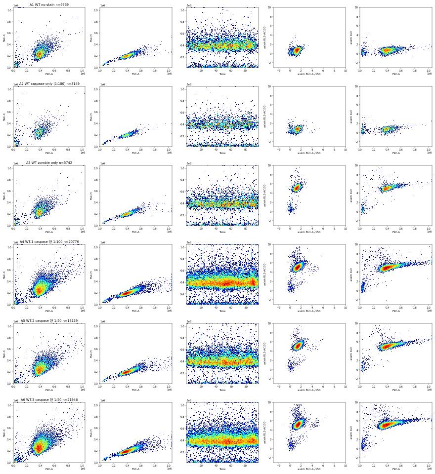
25
tool call · Read
{
"file_path": "/task/work/explore_1.png"
}26
tool output
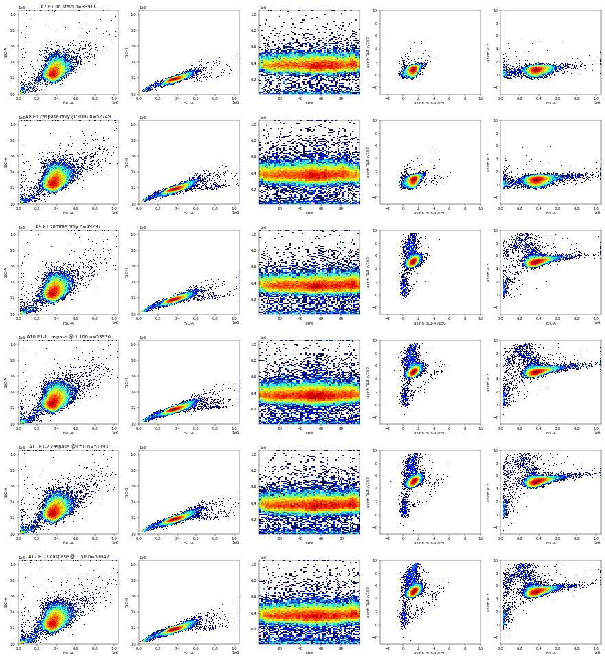
27
tool call · Read
{
"file_path": "/task/work/explore_2.png"
}28
tool output
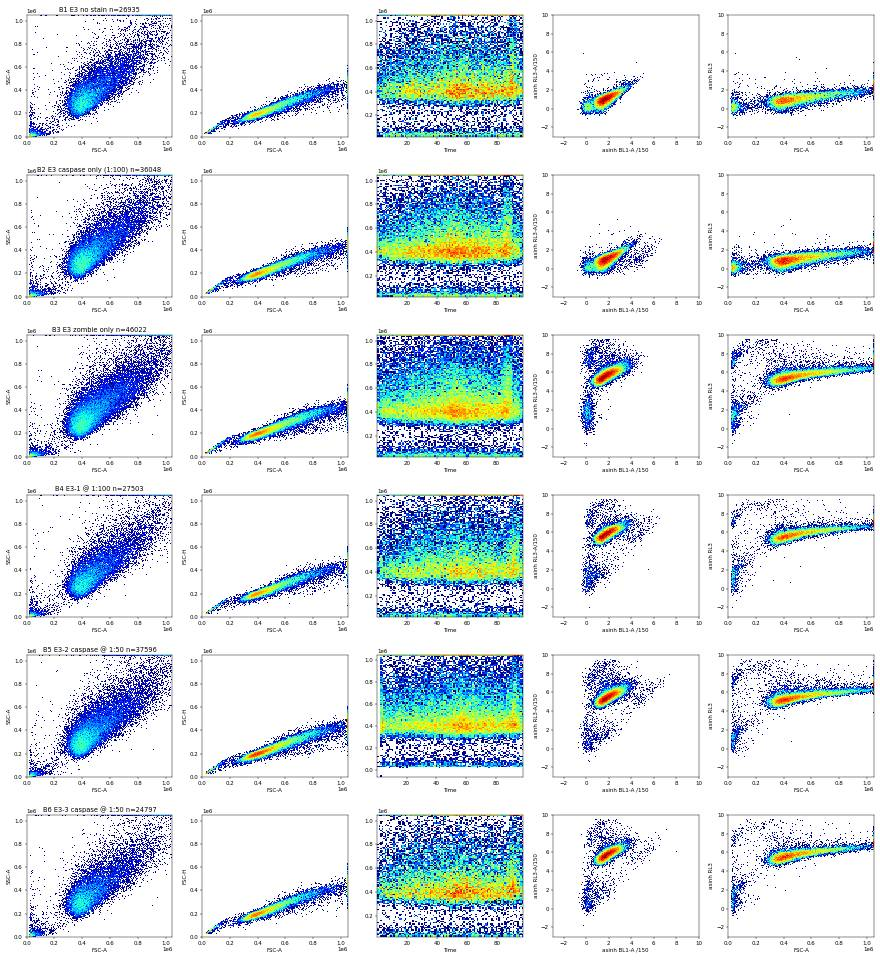
30
tool call · Bash
cd /task/work; cat > /task/work/time.py <<'EOF'
import flowkit as fk, pandas as pd, numpy as np, matplotlib
matplotlib.use('Agg'); import matplotlib.pyplot as plt
lay = pd.read_csv('/task/inputs/plate_layout.csv')
fig, axes = plt.subplots(6,3, figsize=(18,18)); axes=axes.ravel()
for i,r in lay.iterrows():
s = fk.Sample('/task/inputs/raw/'+r.file)
df = s.as_dataframe(source='raw'); df.columns = df.columns.get_level_values(0)
t = df['Time']*0.001
cnt,edges=np.histogram(t,bins=np.arange(0,99,1))
big = df['FSC-A']>1.5e5
cnt2,_=np.histogram(t[big],bins=edges)
axes[i].step(edges[:-1],cnt,label='all'); axes[i].step(edges[:-1],cnt2,label='FSC>1.5e5')
axes[i].set_title(f"{r.well} {r['sample']} n={len(df)}")
print(r.well, len(df), 'first5s',cnt[:5].sum(),'mid',np.median(cnt), 'last5', cnt[-5:], 'max',cnt.max(), 'argmax',cnt.argmax(), 'cv', round(cnt[5:-3].std()/cnt[5:-3].mean(),3))
axes[0].legend(); plt.tight_layout(); plt.savefig('/task/work/time.png',dpi=50)
EOF
python -I /task/work/time.py31
tool output
/task/work/time.py:14: RuntimeWarning: invalid value encountered in scalar divide print(r.well, len(df), 'first5s',cnt[:5].sum(),'mid',np.median(cnt), 'last5', cnt[-5:], 'max',cnt.max(), 'argmax',cnt.argmax(), 'cv', round(cnt[5:-3].std()/cnt[5:-3].mean(),3)) /task/work/time.py:14: RuntimeWarning: invalid value encountered in scalar divide print(r.well, len(df), 'first5s',cnt[:5].sum(),'mid',np.median(cnt), 'last5', cnt[-5:], 'max',cnt.max(), 'argmax',cnt.argmax(), 'cv', round(cnt[5:-3].std()/cnt[5:-3].mean(),3)) /task/work/time.py:14: RuntimeWarning: invalid value encountered in scalar divide print(r.well, len(df), 'first5s',cnt[:5].sum(),'mid',np.median(cnt), 'last5', cnt[-5:], 'max',cnt.max(), 'argmax',cnt.argmax(), 'cv', round(cnt[5:-3].std()/cnt[5:-3].mean(),3)) /task/work/time.py:14: RuntimeWarning: invalid value encountered in scalar divide print(r.well, len(df), 'first5s',cnt[:5].sum(),'mid',np.median(cnt), 'last5', cnt[-5:], 'max',cnt.max(), 'argmax',cnt.argmax(), 'cv', round(cnt[5:-3].std()/cnt[5:-3].mean(),3)) /task/work/time.py:14: RuntimeWarning: invalid value encountered in scalar divide print(r.well, len(df), 'first5s',cnt[:5].sum(),'mid',np.median(cnt), 'last5', cnt[-5:], 'max',cnt.max(), 'argmax',cnt.argmax(), 'cv', round(cnt[5:-3].std()/cnt[5:-3].mean(),3)) /task/work/time.py:14: RuntimeWarning: invalid value encountered in scalar divide print(r.well, len(df), 'first5s',cnt[:5].sum(),'mid',np.median(cnt), 'last5', cnt[-5:], 'max',cnt.max(), 'argmax',cnt.argmax(), 'cv', round(cnt[5:-3].std()/cnt[5:-3].mean(),3)) /task/work/time.py:14: RuntimeWarning: invalid value encountered in scalar divide print(r.well, len(df), 'first5s',cnt[:5].sum(),'mid',np.median(cnt), 'last5', cnt[-5:], 'max',cnt.max(), 'argmax',cnt.argmax(), 'cv', round(cnt[5:-3].std()/cnt[5:-3].mean(),3)) /task/work/time.py:14: RuntimeWarning: invalid value encountered in scalar divide print(r.well, len(df), 'first5s',cnt[:5].sum(),'mid',np.median(cnt), 'last5', cnt[-5:], 'max',cnt.max(), 'argmax',cnt.argmax(), 'cv', round(cnt[5:-3].std()/cnt[5:-3].mean(),3)) /task/work/time.py:14: RuntimeWarning: invalid value encountered in scalar divide print(r.well, len(df), 'first5s',cnt[:5].sum(),'mid',np.median(cnt), 'last5', cnt[-5:], 'max',cnt.max(), 'argmax',cnt.argmax(), 'cv', round(cnt[5:-3].std()/cnt[5:-3].mean(),3)) /task/work/time.py:14: RuntimeWarning: invalid value encountered in scalar divide print(r.well, len(df), 'first5s',cnt[:5].sum(),'mid',np.median(cnt), 'last5', cnt[-5:], 'max',cnt.max(), 'argmax',cnt.argmax(), 'cv', round(cnt[5:-3].std()/cnt[5:-3].mean(),3)) /task/work/time.py:14: RuntimeWarning: invalid value encountered in scalar divide print(r.well, len(df), 'first5s',cnt[:5].sum(),'mid',np.median(cnt), 'last5', cnt[-5:], 'max',cnt.max(), 'argmax',cnt.argmax(), 'cv', round(cnt[5:-3].std()/cnt[5:-3].mean(),3)) /task/work/time.py:14: RuntimeWarning: invalid value encountered in scalar divide print(r.well, len(df), 'first5s',cnt[:5].sum(),'mid',np.median(cnt), 'last5', cnt[-5:], 'max',cnt.max(), 'argmax',cnt.argmax(), 'cv', round(cnt[5:-3].std()/cnt[5:-3].mean(),3)) /task/work/time.py:14: RuntimeWarning: invalid value encountered in scalar divide print(r.well, len(df), 'first5s',cnt[:5].sum(),'mid',np.median(cnt), 'last5', cnt[-5:], 'max',cnt.max(), 'argmax',cnt.argmax(), 'cv', round(cnt[5:-3].std()/cnt[5:-3].mean(),3)) /task/work/time.py:14: RuntimeWarning: invalid value encountered in scalar divide print(r.well, len(df), 'first5s',cnt[:5].sum(),'mid',np.median(cnt), 'last5', cnt[-5:], 'max',cnt.max(), 'argmax',cnt.argmax(), 'cv', round(cnt[5:-3].std()/cnt[5:-3].mean(),3)) /task/work/time.py:14: RuntimeWarning: invalid value encountered in scalar divide print(r.well, len(df), 'first5s',cnt[:5].sum(),'mid',np.median(cnt), 'last5', cnt[-5:], 'max',cnt.max(), 'argmax',cnt.argmax(), 'cv', round(cnt[5:-3].std()/cnt[5:-3].mean(),3)) /task/work/time.py:14: RuntimeWarning: invalid value encountered in scalar divide print(r.well, len(df), 'first5s',cnt[:5].sum(),'mid',np.median(cnt), 'last5', cnt[-5:], 'max',cnt.max(), 'argmax',cnt.argmax(), 'cv', round(cnt[5:-3].std()/cnt[5:-3].mean(),3)) /task/work/time.py:14: RuntimeWarning: invalid value encountered in scalar divide print(r.well, len(df), 'first5s',cnt[:5].sum(),'mid',np.median(cnt), 'last5', cnt[-5:], 'max',cnt.max(), 'argmax',cnt.argmax(), 'cv', round(cnt[5:-3].std()/cnt[5:-3].mean(),3)) /task/work/time.py:14: RuntimeWarning: invalid value encountered in scalar divide print(r.well, len(df), 'first5s',cnt[:5].sum(),'mid',np.median(cnt), 'last5', cnt[-5:], 'max',cnt.max(), 'argmax',cnt.argmax(), 'cv', round(cnt[5:-3].std()/cnt[5:-3].mean(),3)) A1 6969 first5s 6969 mid 0.0 last5 [0 0 0 0 0] max 6969 argmax 0 cv nan A2 3149 first5s 3149 mid 0.0 last5 [0 0 0 0 0] max 3149 argmax 0 cv nan A3 5742 first5s 5742 mid 0.0 last5 [0 0 0 0 0] max 5742 argmax 0 cv nan A4 20776 first5s 20776 mid 0.0 last5 [0 0 0 0 0] max 20776 argmax 0 cv nan A5 13119 first5s 13119 mid 0.0 last5 [0 0 0 0 0] max 13119 argmax 0 cv nan A6 21946 first5s 21946 mid 0.0 last5 [0 0 0 0 0] max 21946 argmax 0 cv nan A7 33911 first5s 33911 mid 0.0 last5 [0 0 0 0 0] max 33911 argmax 0 cv nan A8 52749 first5s 52749 mid 0.0 last5 [0 0 0 0 0] max 52749 argmax 0 cv nan A9 49297 first5s 49297 mid 0.0 last5 [0 0 0 0 0] max 49297 argmax 0 cv nan A10 58936 first5s 58936 mid 0.0 last5 [0 0 0 0 0] max 58936 argmax 0 cv nan A11 51193 first5s 51193 mid 0.0 last5 [0 0 0 0 0] max 51193 argmax 0 cv nan A12 51047 first5s 51047 mid 0.0 last5 [0 0 0 0 0] max 51047 argmax 0 cv nan B1 26935 first5s 26935 mid 0.0 last5 [0 0 0 0 0] max 26935 argmax 0 cv nan B2 36048 first5s 36048 mid 0.0 last5 [0 0 0 0 0] max 36048 argmax 0 cv nan B3 46022 first5s 46022 mid 0.0 last5 [0 0 0 0 0] max 46022 argmax 0 cv nan B4 27503 first5s 27503 mid 0.0 last5 [0 0 0 0 0] max 27503 argmax 0 cv nan B5 37596 first5s 37596 mid 0.0 last5 [0 0 0 0 0] max 37596 argmax 0 cv nan B6 24797 first5s 24797 mid 0.0 la … [41 more characters not shown]
33
tool call · Bash
cd /task/work; sed -i "s/t = df\['Time'\]\*0.001/t = df['Time']/" time.py; python -I time.py 2>/dev/null
34
tool output
A1 6969 first5s 192 mid 72.0 last5 [44 31 31 16 9] max 118 argmax 85 cv 0.224 A2 3149 first5s 121 mid 32.0 last5 [23 22 21 12 7] max 54 argmax 83 cv 0.22 A3 5742 first5s 130 mid 59.0 last5 [63 53 42 64 2] max 92 argmax 89 cv 0.204 A4 20776 first5s 620 mid 215.0 last5 [173 175 140 156 0] max 343 argmax 89 cv 0.204 A5 13119 first5s 447 mid 137.0 last5 [97 66 80 47 0] max 231 argmax 52 cv 0.207 A6 21946 first5s 544 mid 221.5 last5 [228 181 193 161 152] max 338 argmax 55 cv 0.182 A7 33911 first5s 773 mid 338.5 last5 [401 358 267 231 198] max 518 argmax 56 cv 0.208 A8 52749 first5s 1812 mid 535.5 last5 [404 479 386 290 181] max 861 argmax 64 cv 0.207 A9 49297 first5s 1308 mid 495.5 last5 [649 572 496 431 355] max 740 argmax 54 cv 0.184 A10 58936 first5s 1915 mid 576.0 last5 [484 404 460 392 215] max 876 argmax 52 cv 0.195 A11 51193 first5s 1304 mid 528.0 last5 [545 483 405 383 59] max 736 argmax 54 cv 0.164 A12 51047 first5s 1421 mid 529.0 last5 [545 571 577 440 372] max 726 argmax 53 cv 0.159 B1 26935 first5s 643 mid 277.5 last5 [230 252 218 233 19] max 492 argmax 89 cv 0.232 B2 36048 first5s 1037 mid 369.5 last5 [284 288 244 175 130] max 538 argmax 86 cv 0.225 B3 46022 first5s 1297 mid 477.0 last5 [400 400 315 214 134] max 764 argmax 86 cv 0.229 B4 27503 first5s 663 mid 286.0 last5 [366 296 252 246 32] max 476 argmax 90 cv 0.215 B5 37596 first5s 1174 mid 384.0 last5 [545 491 371 344 275] max 683 argmax 3 cv 0.218 B6 24797 first5s 595 mid 261.5 last5 [283 287 230 200 35] max 464 argmax 90 cv 0.223
35
tool call · Read
{
"file_path": "/task/work/time.png"
}36
tool output
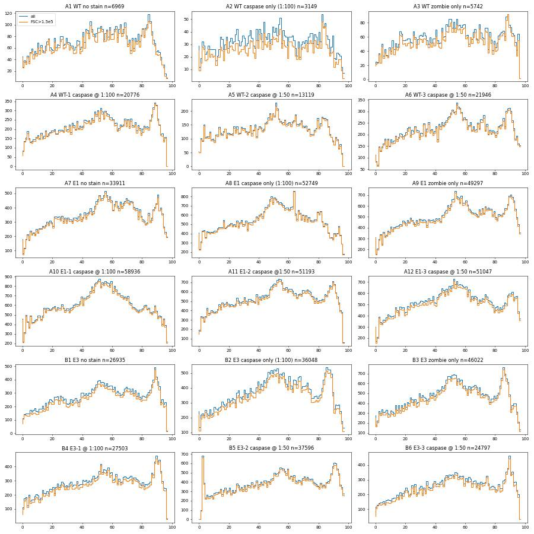
38
thinking
Event rates look steady across all wells, with WT wells simply having fewer events (A2 lowest at 3,149). Next I'll inspect the debris, singlet, viability and caspase regions to set the gates.
39
tool call · Bash
cd /task/work; cat > /task/work/explore2.py <<'EOF'
import flowkit as fk, pandas as pd, numpy as np, matplotlib
matplotlib.use('Agg'); import matplotlib.pyplot as plt
lay = pd.read_csv('/task/inputs/plate_layout.csv')
def A(x,c=150): return np.arcsinh(np.asarray(x)/c)
sel = ['A3','A4','A10','B1','B3','B4']
fig, axes = plt.subplots(len(sel),4, figsize=(20,5*len(sel)))
for j,w in enumerate(sel):
r = lay[lay.well==w].iloc[0]
s = fk.Sample('/task/inputs/raw/'+r.file)
df = s.as_dataframe(source='raw'); df.columns = df.columns.get_level_values(0)
ax=axes[j]
dead = A(df['RL3-A'])>6.8
ax[0].scatter(df['FSC-A'],df['SSC-A'],s=1,c='gray',alpha=.3); ax[0].scatter(df['FSC-A'][dead],df['SSC-A'][dead],s=2,c='r')
ax[0].set_xlim(0,1.05e6); ax[0].set_ylim(0,1.05e6); ax[0].set_title(f"{w} {r['sample']} red=RL3 asinh>6.8"); ax[0].grid()
ax[1].hist2d(df['FSC-A'],df['FSC-H'],bins=300,range=[[0,1.05e6],[0,6e5]],cmap='jet',norm=matplotlib.colors.LogNorm()); ax[1].grid(); ax[1].set_title('FSC-A vs FSC-H')
ax[2].hist2d(df['FSC-H'],df['FSC-W'],bins=300,range=[[0,6e5],[0,1024]],cmap='jet',norm=matplotlib.colors.LogNorm()); ax[2].grid(); ax[2].set_title('FSC-H vs FSC-W')
ax[3].hist2d(df['FSC-A'],A(df['BL1-A']),bins=300,range=[[0,1.05e6],[-2,8]],cmap='jet',norm=matplotlib.colors.LogNorm()); ax[3].grid(); ax[3].set_title('FSC-A vs asinh BL1')
plt.tight_layout(); plt.savefig('/task/work/explore2.png',dpi=45)
EOF
python -I explore2.py40
tool output
(Bash completed with no output)
41
tool call · Read
{
"file_path": "/task/work/explore2.png"
}42
tool output
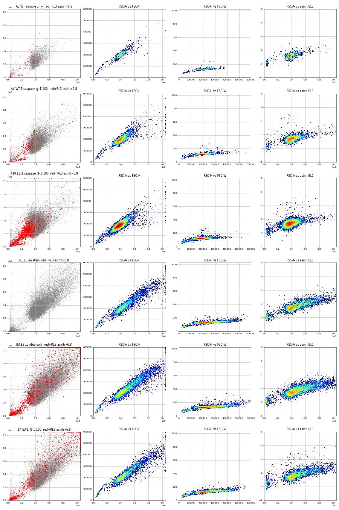
44
tool call · Bash
cd /task/work; python -I -c " import flowkit as fk, inspect print(inspect.signature(fk.transforms.LogicleTransform.__init__)) print(inspect.signature(fk.transforms.AsinhTransform.__init__)) print(inspect.signature(fk.GatingStrategy.add_transform)) print(inspect.signature(fk.GatingStrategy.add_gate)) print(inspect.signature(fk.Dimension.__init__)) print(inspect.signature(fk.gates.PolygonGate.__init__)) print(inspect.signature(fk.gates.RectangleGate.__init__)) print(inspect.signature(fk.Sample.__init__)) print(inspect.signature(fk.GatingStrategy.gate_sample)) "
45
tool output
(self, param_t, param_w, param_m, param_a) (self, param_t, param_m, param_a) (self, transform_id, transform) (self, gate, gate_path, sample_id=None) (self, dimension_id, compensation_ref='uncompensated', transformation_ref=None, range_min=None, range_max=None) (self, gate_name, dimensions, vertices, use_complement=False) (self, gate_name, dimensions, use_complement=False) (self, fcs_path_or_data, sample_id=None, filename_as_id=False, channel_labels=None, compensation=None, null_channel_list=None, ignore_offset_error=False, ignore_offset_discrepancy=False, use_header_offsets=False, cache_original_events=False, subsample=10000) (self, sample, cache_events=False, verbose=False)
47
tool call · Bash
cd /task/work; cat > /task/work/sat.py <<'EOF'
import flowkit as fk, pandas as pd, numpy as np
lay = pd.read_csv('/task/inputs/plate_layout.csv')
xf = fk.transforms.LogicleTransform(param_t=1048576, param_w=0.5, param_m=6.0, param_a=0)
for i,r in lay.iterrows():
s = fk.Sample('/task/inputs/raw/'+r.file)
df = s.as_dataframe(source='raw'); df.columns = df.columns.get_level_values(0)
mx = 1048575
sat = {c: int((df[c]>=mx-1).sum()) for c in ['FSC-A','SSC-A','BL1-A','RL3-A','FSC-H','SSC-H','BL1-H','RL3-H']}
print(r.well, len(df), sat, 'BL1min',df['BL1-A'].min(),'RL3min',df['RL3-A'].min(), 'max FSC-A', df['FSC-A'].max())
v = np.array([-100,0,100,250,500,1000,2000,5000,1e4,3e4,1e5,1e6])
print(dict(zip(v, np.round(xf.apply(v),3))))
EOF
python -I sat.py48
tool output
A1 6969 {'FSC-A': 9, 'SSC-A': 12, 'BL1-A': 0, 'RL3-A': 0, 'FSC-H': 0, 'SSC-H': 1, 'BL1-H': 0, 'RL3-H': 0} BL1min -91.0 RL3min -171.0 max FSC-A 1048575.0
A2 3149 {'FSC-A': 3, 'SSC-A': 12, 'BL1-A': 0, 'RL3-A': 0, 'FSC-H': 0, 'SSC-H': 1, 'BL1-H': 0, 'RL3-H': 0} BL1min -117.0 RL3min -153.0 max FSC-A 1048575.0
A3 5742 {'FSC-A': 9, 'SSC-A': 14, 'BL1-A': 0, 'RL3-A': 6, 'FSC-H': 0, 'SSC-H': 0, 'BL1-H': 0, 'RL3-H': 2} BL1min -96.0 RL3min -156.0 max FSC-A 1048575.0
A4 20776 {'FSC-A': 67, 'SSC-A': 46, 'BL1-A': 0, 'RL3-A': 19, 'FSC-H': 0, 'SSC-H': 3, 'BL1-H': 0, 'RL3-H': 2} BL1min -85.0 RL3min -1823.0 max FSC-A 1048575.0
A5 13119 {'FSC-A': 18, 'SSC-A': 18, 'BL1-A': 0, 'RL3-A': 17, 'FSC-H': 0, 'SSC-H': 2, 'BL1-H': 0, 'RL3-H': 4} BL1min -70.0 RL3min -3371.0 max FSC-A 1048575.0
A6 21946 {'FSC-A': 38, 'SSC-A': 28, 'BL1-A': 0, 'RL3-A': 41, 'FSC-H': 0, 'SSC-H': 2, 'BL1-H': 0, 'RL3-H': 7} BL1min -192.0 RL3min -430.0 max FSC-A 1048575.0
A7 33911 {'FSC-A': 17, 'SSC-A': 33, 'BL1-A': 0, 'RL3-A': 0, 'FSC-H': 0, 'SSC-H': 5, 'BL1-H': 0, 'RL3-H': 0} BL1min -100.0 RL3min -194.0 max FSC-A 1048575.0
A8 52749 {'FSC-A': 35, 'SSC-A': 52, 'BL1-A': 0, 'RL3-A': 0, 'FSC-H': 0, 'SSC-H': 7, 'BL1-H': 0, 'RL3-H': 0} BL1min -95.0 RL3min -146.0 max FSC-A 1048575.0
A9 49297 {'FSC-A': 36, 'SSC-A': 43, 'BL1-A': 0, 'RL3-A': 35, 'FSC-H': 0, 'SSC-H': 7, 'BL1-H': 0, 'RL3-H': 3} BL1min -126.0 RL3min -1697.0 max FSC-A 1048575.0
A10 58936 {'FSC-A': 59, 'SSC-A': 56, 'BL1-A': 0, 'RL3-A': 62, 'FSC-H': 0, 'SSC-H': 8, 'BL1-H': 0, 'RL3-H': 9} BL1min -702.0 RL3min -520.0 max FSC-A 1048575.0
A11 51193 {'FSC-A': 38, 'SSC-A': 50, 'BL1-A': 0, 'RL3-A': 74, 'FSC-H': 0, 'SSC-H': 7, 'BL1-H': 0, 'RL3-H': 13} BL1min -353.0 RL3min -12954.0 max FSC-A 1048575.0
A12 51047 {'FSC-A': 30, 'SSC-A': 47, 'BL1-A': 0, 'RL3-A': 83, 'FSC-H': 0, 'SSC-H': 6, 'BL1-H': 0, 'RL3-H': 10} BL1min -118.0 RL3min -1325.0 max FSC-A 1048575.0
B1 26935 {'FSC-A': 786, 'SSC-A': 973, 'BL1-A': 0, 'RL3-A': 0, 'FSC-H': 0, 'SSC-H': 16, 'BL1-H': 0, 'RL3-H': 0} BL1min -122.0 RL3min -203.0 max FSC-A 1048575.0
B2 36048 {'FSC-A': 1054, 'SSC-A': 1198, 'BL1-A': 0, 'RL3-A': 0, 'FSC-H': 0, 'SSC-H': 21, 'BL1-H': 0, 'RL3-H': 0} BL1min -119.0 RL3min -189.0 max FSC-A 1048575.0
B3 46022 {'FSC-A': 1692, 'SSC-A': 1830, 'BL1-A': 0, 'RL3-A': 148, 'FSC-H': 0, 'SSC-H': 28, 'BL1-H': 0, 'RL3-H': 45} BL1min -112.0 RL3min -5058.0 max FSC-A 1048575.0
B4 27503 {'FSC-A': 940, 'SSC-A': 1004, 'BL1-A': 0, 'RL3-A': 130, 'FSC-H': 0, 'SSC-H': 14, 'BL1-H': 0, 'RL3-H': 33} BL1min -109.0 RL3min -534.0 max FSC-A 1048575.0
B5 37596 {'FSC-A': 1355, 'SSC-A': 1450, 'BL1-A': 0, 'RL3-A': 138, 'FSC-H': 0, 'SSC-H': 35, 'BL1-H': 0, 'RL3-H': 35} BL1min -114.0 RL3min -1246.0 max FSC-A 1048575.0
B6 24797 {'FSC-A': 676, 'SSC-A': 818, 'BL1-A': 0, 'RL3-A': 94, 'FSC-H': 0, 'SSC-H': 12, 'BL1-H': 0, 'RL3-H': 29} BL1min -108.0 RL3min -1699.0 max FSC-A 1048575.0
{-100.0: -0.156, 0.0: 0.083, 100.0: 0.322, 250.0: 0.393, 500.0: 0.445, 1000.0: 0.496, 2000.0: 0.546, 5000.0: 0.613, 10000.0: 0.663, 30000.0: 0.743, 100000.0: 0.83, 1000000.0: 0.997}50
tool call · Bash
cd /task/work; cat > /task/work/explore3.py <<'EOF'
import flowkit as fk, pandas as pd, numpy as np, matplotlib
matplotlib.use('Agg'); import matplotlib.pyplot as plt
lay = pd.read_csv('/task/inputs/plate_layout.csv')
xf = fk.transforms.LogicleTransform(param_t=1048576, param_w=0.5, param_m=6.0, param_a=0)
fig, axes = plt.subplots(18,4, figsize=(20,90))
for i,r in lay.iterrows():
s = fk.Sample('/task/inputs/raw/'+r.file)
df = s.as_dataframe(source='raw'); df.columns = df.columns.get_level_values(0)
ax=axes[i]
ax[0].hist2d(df['FSC-A'],df['FSC-H'],bins=300,range=[[0,1.05e6],[0,6e5]],cmap='jet',norm=matplotlib.colors.LogNorm()); ax[0].grid()
xx=np.linspace(0,1.05e6,10)
for k in [0.33,0.38,0.6]: ax[0].plot(xx,k*xx,'k-')
ax[0].set_title(f"{r.well} {r['sample']}")
cell = (df['FSC-A']>1.2e5)&(df['FSC-A']<1.04e6)&(df['SSC-A']<1.04e6)&(df['SSC-A']>2e4)
sing = cell & (df['FSC-H']>0.38*df['FSC-A']) & (df['FSC-H']<0.6*df['FSC-A'])
d=df[sing]
b=xf.apply(d['BL1-A'].values); rl=xf.apply(d['RL3-A'].values)
ax[1].hist2d(d['FSC-A'],rl,bins=250,range=[[0,1.05e6],[0,1]],cmap='jet',norm=matplotlib.colors.LogNorm()); ax[1].grid(); ax[1].set_title('FSC-A vs logicle RL3 (singlets)')
ax[2].hist2d(d['FSC-A'],b,bins=250,range=[[0,1.05e6],[0,1]],cmap='jet',norm=matplotlib.colors.LogNorm()); ax[2].grid(); ax[2].set_title(f'FSC-A vs logicle BL1 n={len(d)}')
ax[3].hist2d(b,rl,bins=250,range=[[0,1],[0,1]],cmap='jet',norm=matplotlib.colors.LogNorm()); ax[3].grid(); ax[3].set_title('BL1 vs RL3 logicle')
plt.tight_layout(); plt.savefig('/task/work/explore3.png',dpi=40)
from PIL import Image
im=Image.open('/task/work/explore3.png'); w,h=im.size
for k in range(3): im.crop((0,k*h//3,w,(k+1)*h//3)).save(f'/task/work/explore3_{k}.png')
EOF
python -I explore3.py51
tool output
(Bash completed with no output)
52
tool call · Read
{
"file_path": "/task/work/explore3_0.png"
}53
tool output
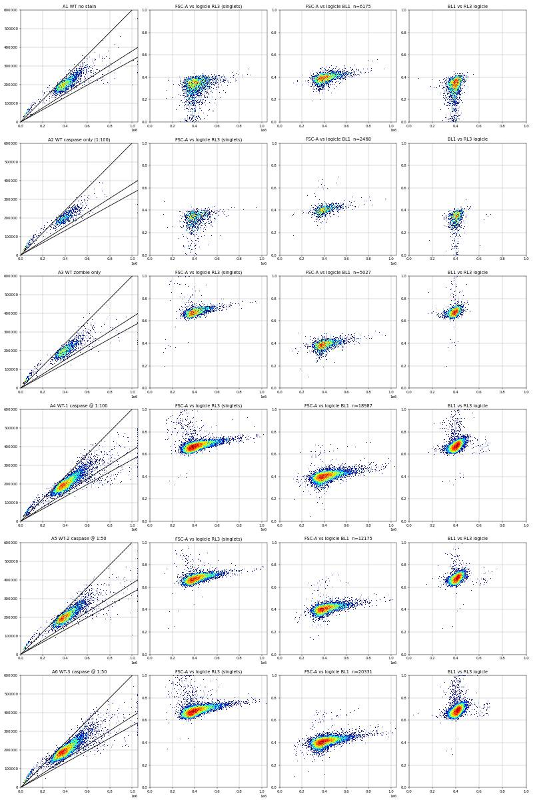
54
tool call · Read
{
"file_path": "/task/work/explore3_1.png"
}55
tool output
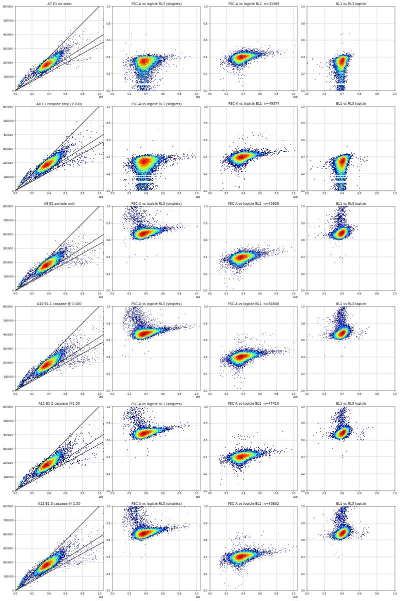
56
tool call · Read
{
"file_path": "/task/work/explore3_2.png"
}57
tool output
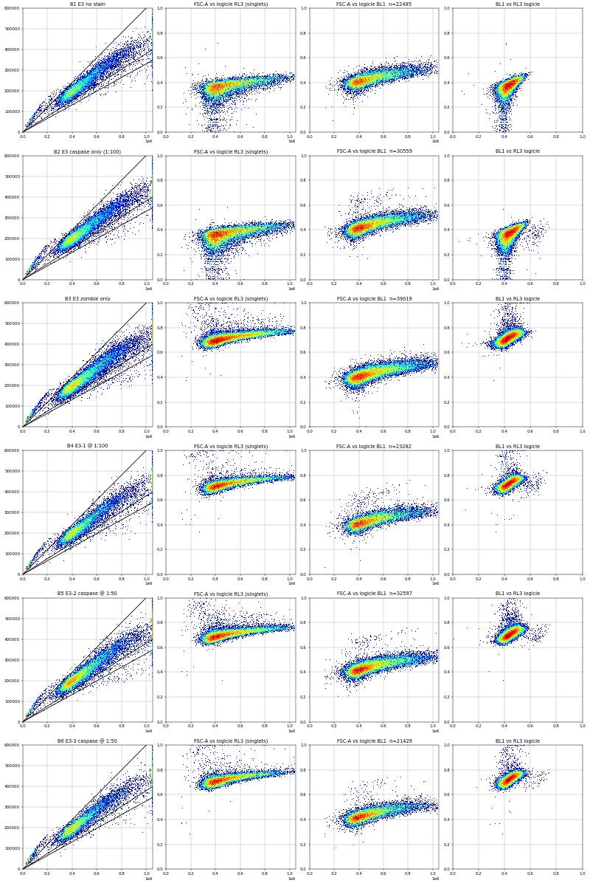
59
thinking
I'm gating the cells on debris exclusion, singlets, and a Zombie NIR live gate, then the BL1 caspase+ gate. Next I'll measure the BL1 background in the unstained and Zombie-only controls against the stained wells.
60
tool call · Bash
cd /task/work; cat > /task/work/bl1.py <<'EOF'
import flowkit as fk, pandas as pd, numpy as np
lay = pd.read_csv('/task/inputs/plate_layout.csv')
xf = fk.transforms.LogicleTransform(param_t=1048576, param_w=0.5, param_m=6.0, param_a=0)
bins = np.array([1.2e5,2e5,3e5,4e5,5e5,6e5,8e5,1.04e6])
out=[]
for i,r in lay.iterrows():
s = fk.Sample('/task/inputs/raw/'+r.file)
df = s.as_dataframe(source='raw'); df.columns = df.columns.get_level_values(0)
cell = (df['FSC-A']>1.2e5)&(df['FSC-A']<1.04e6)&(df['SSC-A']<1.04e6)&(df['SSC-A']>2e4)
sing = cell & (df['FSC-H']>0.38*df['FSC-A']) & (df['FSC-H']<0.6*df['FSC-A'])
d=df[sing].copy()
d['b']=xf.apply(d['BL1-A'].values); d['r']=xf.apply(d['RL3-A'].values)
d['fb']=pd.cut(d['FSC-A'],bins)
med = d.groupby('fb',observed=False)['b'].quantile(0.5).round(3).values
q995 = d.groupby('fb',observed=False)['b'].quantile(0.995).round(3).values
print(r.well, r['sample'][:22].ljust(22), 'med',med, 'q99.5',q995)
EOF
python -I bl1.py61
tool output
A1 WT no stain med [0.35 0.366 0.382 0.401 0.42 0.433 0.472] q99.5 [0.419 0.446 0.452 0.469 0.493 0.518 0.557] A2 WT caspase only (1:100 med [0.352 0.382 0.394 0.412 0.43 0.442 0.496] q99.5 [0.373 0.512 0.606 0.487 0.644 0.523 0.533] A3 WT zombie only med [0.36 0.375 0.38 0.399 0.414 0.434 0.463] q99.5 [0.488 0.463 0.45 0.467 0.47 0.515 0.508] A4 WT-1 caspase @ 1:100 med [0.356 0.382 0.39 0.411 0.427 0.448 0.478] q99.5 [0.576 0.622 0.491 0.49 0.51 0.638 0.639] A5 WT-2 caspase @ 1:50 med [0.33 0.386 0.397 0.416 0.432 0.451 0.481] q99.5 [0.402 0.613 0.519 0.517 0.641 0.677 0.696] A6 WT-3 caspase @ 1:50 med [0.36 0.393 0.4 0.419 0.435 0.455 0.485] q99.5 [0.43 0.564 0.522 0.511 0.64 0.672 0.575] A7 E1 no stain med [0.34 0.375 0.39 0.406 0.42 0.44 0.461] q99.5 [0.44 0.451 0.463 0.483 0.502 0.528 0.532] A8 E1 caspase only (1:100 med [0.346 0.379 0.393 0.41 0.425 0.447 0.469] q99.5 [0.441 0.455 0.473 0.486 0.595 0.654 0.58 ] A9 E1 zombie only med [0.354 0.376 0.389 0.405 0.417 0.443 0.475] q99.5 [0.453 0.45 0.459 0.482 0.519 0.557 0.555] A10 E1-1 caspase @ 1:100 med [0.361 0.384 0.395 0.411 0.426 0.45 0.472] q99.5 [0.457 0.463 0.469 0.491 0.53 0.671 0.556] A11 E1-2 caspase @1:50 med [0.356 0.389 0.398 0.415 0.431 0.449 0.471] q99.5 [0.461 0.465 0.475 0.49 0.514 0.552 0.653] A12 E1-3 caspase @ 1:50 med [0.364 0.39 0.398 0.416 0.431 0.45 0.479] q99.5 [0.503 0.479 0.475 0.499 0.542 0.699 0.723] B1 E3 no stain med [0.353 0.383 0.396 0.416 0.444 0.471 0.499] q99.5 [0.445 0.498 0.48 0.508 0.533 0.562 0.593] B2 E3 caspase only (1:100 med [0.37 0.389 0.403 0.425 0.455 0.481 0.509] q99.5 [0.42 0.584 0.613 0.623 0.647 0.666 0.676] B3 E3 zombie only med [0.358 0.386 0.393 0.414 0.444 0.471 0.5 ] q99.5 [0.452 0.476 0.484 0.508 0.538 0.567 0.594] B4 E3-1 @ 1:100 med [0.374 0.392 0.398 0.419 0.448 0.474 0.502] q99.5 [0.494 0.603 0.598 0.625 0.648 0.665 0.593] B5 E3-2 caspase @ 1:50 med [0.364 0.4 0.408 0.43 0.458 0.483 0.51 ] q99.5 [0.502 0.574 0.591 0.625 0.656 0.604 0.625] B6 E3-3 caspase @ 1:50 med [0.371 0.396 0.408 0.43 0.457 0.483 0.507] q99.5 [0.464 0.549 0.588 0.608 0.673 0.645 0.628]
63
tool call · Bash
cd /task/work; cat > /task/work/bl1b.py <<'EOF'
import flowkit as fk, pandas as pd, numpy as np
lay = pd.read_csv('/task/inputs/plate_layout.csv')
xf = fk.transforms.LogicleTransform(param_t=1048576, param_w=0.5, param_m=6.0, param_a=0)
for i,r in lay.iterrows():
s = fk.Sample('/task/inputs/raw/'+r.file)
df = s.as_dataframe(source='raw'); df.columns = df.columns.get_level_values(0)
cell = (df['FSC-A']>1.2e5)&(df['FSC-A']<1.04e6)&(df['SSC-A']<1.04e6)&(df['SSC-A']>2e4)
sing = cell & (df['FSC-H']>0.38*df['FSC-A']) & (df['FSC-H']<0.6*df['FSC-A'])
d=df[sing].copy()
b=xf.apply(d['BL1-A'].values); rr=xf.apply(d['RL3-A'].values); f=d['FSC-A'].values
res=[]
for a0 in [0.46,0.48,0.50,0.52]:
pos = b > a0 + 0.115*f/1e6
res.append(round(100*pos.mean(),2))
live = rr < 0.78 + 0.03*f/1e6
pos = b > 0.48 + 0.115*f/1e6
print(r.well, r['sample'][:22].ljust(22), 'n',len(d), '%pos(sing) by a0', res, ' live%',round(100*live.mean(),1), ' %pos in live', round(100*pos[live].mean(),2), ' %pos in dead', round(100*pos[~live].mean(),2) if (~live).sum() else None, 'npos live', pos[live].sum())
EOF
python -I bl1b.py64
tool output
A1 WT no stain n 6175 %pos(sing) by a0 [0.0, 0.0, 0.0, 0.0] live% 100.0 %pos in live 0.0 %pos in dead None npos live 0 A2 WT caspase only (1:100 n 2468 %pos(sing) by a0 [0.73, 0.73, 0.69, 0.57] live% 100.0 %pos in live 0.73 %pos in dead None npos live 18 A3 WT zombie only n 5027 %pos(sing) by a0 [0.04, 0.0, 0.0, 0.0] live% 98.7 %pos in live 0.0 %pos in dead 0.0 npos live 0 A4 WT-1 caspase @ 1:100 n 18987 %pos(sing) by a0 [0.46, 0.42, 0.38, 0.34] live% 98.7 %pos in live 0.41 %pos in dead 0.78 npos live 77 A5 WT-2 caspase @ 1:50 n 12175 %pos(sing) by a0 [0.66, 0.58, 0.53, 0.48] live% 99.0 %pos in live 0.56 %pos in dead 2.38 npos live 68 A6 WT-3 caspase @ 1:50 n 20331 %pos(sing) by a0 [0.65, 0.59, 0.53, 0.5] live% 98.1 %pos in live 0.58 %pos in dead 0.77 npos live 116 A7 E1 no stain n 31589 %pos(sing) by a0 [0.08, 0.02, 0.01, 0.0] live% 100.0 %pos in live 0.02 %pos in dead None npos live 6 A8 E1 caspase only (1:100 n 49374 %pos(sing) by a0 [0.21, 0.16, 0.14, 0.13] live% 100.0 %pos in live 0.16 %pos in dead None npos live 80 A9 E1 zombie only n 45928 %pos(sing) by a0 [0.06, 0.02, 0.0, 0.0] live% 97.5 %pos in live 0.02 %pos in dead 0.0 npos live 8 A10 E1-1 caspase @ 1:100 n 54846 %pos(sing) by a0 [0.21, 0.16, 0.15, 0.13] live% 97.5 %pos in live 0.15 %pos in dead 0.59 npos live 81 A11 E1-2 caspase @1:50 n 47416 %pos(sing) by a0 [0.22, 0.18, 0.16, 0.15] live% 97.6 %pos in live 0.17 %pos in dead 0.62 npos live 79 A12 E1-3 caspase @ 1:50 n 46862 %pos(sing) by a0 [0.34, 0.25, 0.22, 0.2] live% 96.8 %pos in live 0.26 %pos in dead 0.2 npos live 116 B1 E3 no stain n 22485 %pos(sing) by a0 [0.88, 0.23, 0.07, 0.03] live% 100.0 %pos in live 0.23 %pos in dead None npos live 52 B2 E3 caspase only (1:100 n 30559 %pos(sing) by a0 [2.34, 1.38, 1.07, 0.94] live% 100.0 %pos in live 1.38 %pos in dead None npos live 423 B3 E3 zombie only n 39019 %pos(sing) by a0 [0.95, 0.28, 0.1, 0.03] live% 97.8 %pos in live 0.26 %pos in dead 1.4 npos live 99 B4 E3-1 @ 1:100 n 23282 %pos(sing) by a0 [2.32, 1.53, 1.23, 1.02] live% 97.1 %pos in live 1.46 %pos in dead 3.96 npos live 329 B5 E3-2 caspase @ 1:50 n 32597 %pos(sing) by a0 [2.21, 1.11, 0.81, 0.69] live% 97.6 %pos in live 1.07 %pos in dead 2.71 npos live 341 B6 E3-3 caspase @ 1:50 n 21429 %pos(sing) by a0 [2.23, 1.12, 0.86, 0.71] live% 97.1 %pos in live 1.03 %pos in dead 3.86 npos live 215
66
tool call · Bash
cd /task/work; cat > /task/work/b5.py <<'EOF'
import flowkit as fk, pandas as pd, numpy as np
lay = pd.read_csv('/task/inputs/plate_layout.csv')
xf = fk.transforms.LogicleTransform(param_t=1048576, param_w=0.5, param_m=6.0, param_a=0)
for w in ['B4','B5','B6','A10']:
r = lay[lay.well==w].iloc[0]
s = fk.Sample('/task/inputs/raw/'+r.file)
df = s.as_dataframe(source='raw'); df.columns = df.columns.get_level_values(0)
for lo,hi in [(0,1),(1,2),(2,5),(5,50),(50,99)]:
d=df[(df.Time>=lo)&(df.Time<hi)]
cell=((d['FSC-A']>1.2e5)&(d['FSC-A']<1.04e6)&(d['SSC-A']<1.04e6)).mean()
print(w, lo,hi, 'n',len(d),'rate',round(len(d)/(hi-lo)), 'cellfrac',round(cell,3),'medFSC',int(d['FSC-A'].median()),'medRL3',int(d['RL3-A'].median()),'medBL1',int(d['BL1-A'].median()))
EOF
python -I b5.py67
tool output
B4 0 1 n 70 rate 70 cellfrac 0.871 medFSC 454701 medRL3 22365 medBL1 376 B4 1 2 n 111 rate 111 cellfrac 0.793 medFSC 467561 medRL3 27280 medBL1 374 B4 2 5 n 482 rate 161 cellfrac 0.894 medFSC 458579 medRL3 23941 medBL1 375 B4 5 50 n 11314 rate 251 cellfrac 0.885 medFSC 463723 medRL3 25259 medBL1 416 B4 50 99 n 15526 rate 317 cellfrac 0.894 medFSC 481128 medRL3 26913 medBL1 448 B5 0 1 n 1 rate 1 cellfrac 0.0 medFSC 60289 medRL3 -77 medBL1 -39 B5 1 2 n 4 rate 4 cellfrac 0.0 medFSC 52691 medRL3 81 medBL1 26 B5 2 5 n 1169 rate 390 cellfrac 0.929 medFSC 475493 medRL3 18350 medBL1 475 B5 5 50 n 15007 rate 333 cellfrac 0.907 medFSC 462613 medRL3 18318 medBL1 471 B5 50 99 n 21415 rate 437 cellfrac 0.91 medFSC 471252 medRL3 18964 medBL1 494 B6 0 1 n 61 rate 61 cellfrac 0.82 medFSC 424723 medRL3 23819 medBL1 478 B6 1 2 n 116 rate 116 cellfrac 0.922 medFSC 436420 medRL3 23486 medBL1 396 B6 2 5 n 418 rate 139 cellfrac 0.923 medFSC 444265 medRL3 22009 medBL1 426 B6 5 50 n 10280 rate 228 cellfrac 0.902 medFSC 454496 medRL3 24205 medBL1 456 B6 50 99 n 13922 rate 284 cellfrac 0.906 medFSC 464371 medRL3 25085 medBL1 481 A10 0 1 n 457 rate 457 cellfrac 0.98 medFSC 382686 medRL3 12880 medBL1 275 A10 1 2 n 215 rate 215 cellfrac 0.967 medFSC 395769 medRL3 12685 medBL1 275 A10 2 5 n 1243 rate 414 cellfrac 0.973 medFSC 381098 medRL3 12711 medBL1 272 A10 5 50 n 26161 rate 581 cellfrac 0.973 medFSC 374767 medRL3 12798 medBL1 275 A10 50 99 n 30860 rate 630 cellfrac 0.976 medFSC 378090 medRL3 12991 medBL1 279
69
tool call · Bash
cd /task/work; cat > /task/work/explore4.py <<'EOF'
import flowkit as fk, pandas as pd, numpy as np, matplotlib
matplotlib.use('Agg'); import matplotlib.pyplot as plt
lay = pd.read_csv('/task/inputs/plate_layout.csv')
xf = fk.transforms.LogicleTransform(param_t=1048576, param_w=0.5, param_m=6.0, param_a=0)
data={}
for i,r in lay.iterrows():
s = fk.Sample('/task/inputs/raw/'+r.file)
df = s.as_dataframe(source='raw'); df.columns = df.columns.get_level_values(0)
df['b']=xf.apply(df['BL1-A'].values); df['r']=xf.apply(df['RL3-A'].values)
data[r.well]=df
pd.to_pickle(data,'/task/work/data.pkl')
fig,axes=plt.subplots(3,4,figsize=(24,16))
groups={'WT':['A1','A2','A3','A4','A5','A6'],'E1':['A7','A8','A9','A10','A11','A12'],'E3':['B1','B2','B3','B4','B5','B6']}
for k,(g,ws) in enumerate(groups.items()):
ax=axes[k]
for w in ws:
df=data[w]; c=(df['FSC-A']>1.2e5)&(df['FSC-A']<1.04e6)&(df['SSC-A']<1.04e6)&(df['FSC-H']>0.38*df['FSC-A'])&(df['FSC-H']<0.6*df['FSC-A'])
d=df[c]; res=d.b-(0.115*d['FSC-A']/1e6)
lab=lay[lay.well==w]['sample'].iloc[0]
ax[0].hist(res,bins=np.linspace(0.2,0.7,150),histtype='step',density=True,log=True,label=f'{w} {lab}')
ax[0].legend(fontsize=8); ax[0].set_title(g+' BL1 logicle residual (minus 0.115*FSC/1e6)'); ax[0].axvline(0.48,color='k')
st=pd.concat([data[w] for w in ws[3:]]); ct=pd.concat([data[w] for w in [ws[0],ws[2]]])
for j,(nm,d) in enumerate([('stained pooled',st),('FMO+unstained pooled',ct)]):
c=(d['FSC-A']>1.2e5)&(d['FSC-A']<1.04e6)&(d['SSC-A']<1.04e6)&(d['FSC-H']>0.38*d['FSC-A'])&(d['FSC-H']<0.6*d['FSC-A']); d=d[c]
ax[1+j].hist2d(d['FSC-A'],d['b'],bins=250,range=[[0,1.05e6],[0.2,0.8]],cmap='jet',norm=matplotlib.colors.LogNorm()); ax[1+j].set_title(g+' '+nm+' FSC-A vs BL1'); ax[1+j].grid()
xx=np.linspace(0,1.05e6,5); ax[1+j].plot(xx,0.48+0.115*xx/1e6,'k-'); ax[1+j].plot(xx,0.50+0.115*xx/1e6,'k--')
d=st[(st['FSC-A']>1.2e5)&(st['FSC-A']<1.04e6)&(st['SSC-A']<1.04e6)]
pos=d.b>0.48+0.115*d['FSC-A']/1e6
ax[3].scatter(d['FSC-A'][~pos],d['SSC-A'][~pos],s=1,c='gray',alpha=.2); ax[3].scatter(d['FSC-A'][pos],d['SSC-A'][pos],s=4,c='r'); ax[3].set_title(g+' stained: red = BL1+'); ax[3].set_xlim(0,1.05e6); ax[3].set_ylim(0,1.05e6)
plt.tight_layout(); plt.savefig('/task/work/explore4.png',dpi=40)
EOF
python -I explore4.py70
tool output
(Bash completed with no output)
71
tool call · Read
{
"file_path": "/task/work/explore4.png"
}72
tool output
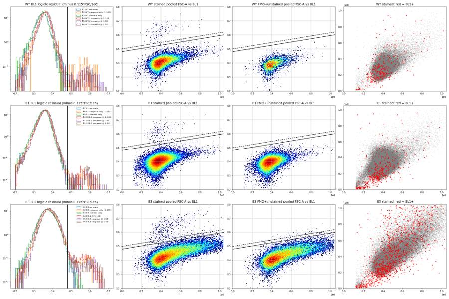
74
tool call · Bash
cd /task/work; cat > /task/work/explore5.py <<'EOF'
import pandas as pd, numpy as np, matplotlib
matplotlib.use('Agg'); import matplotlib.pyplot as plt
data=pd.read_pickle('/task/work/data.pkl')
lay = pd.read_csv('/task/inputs/plate_layout.csv')
ws=['B1','B3','B2','B4','B5','B6','A3','A4','A9','A12']
fig,axes=plt.subplots(2,5,figsize=(30,12)); axes=axes.ravel()
for k,w in enumerate(ws):
df=data[w]; c=(df['FSC-A']>1.2e5)&(df['FSC-A']<1.04e6)&(df['SSC-A']<1.04e6)&(df['FSC-H']>0.38*df['FSC-A'])&(df['FSC-H']<0.6*df['FSC-A'])
d=df[c]
axes[k].scatter(d['FSC-A'],d['b'],s=1,c='k',alpha=0.3)
xx=np.linspace(0,1.05e6,5); axes[k].plot(xx,0.48+0.115*xx/1e6,'r-')
axes[k].plot([1.2e5,5e5,1.04e6],[0.49,0.53,0.63],'b-')
axes[k].set_ylim(0.3,0.8); axes[k].set_xlim(0,1.05e6); axes[k].grid()
axes[k].set_title(w+' '+lay[lay.well==w]['sample'].iloc[0])
plt.tight_layout(); plt.savefig('/task/work/explore5.png',dpi=38)
EOF
python -I explore5.py75
tool output
(Bash completed with no output)
76
tool call · Read
{
"file_path": "/task/work/explore5.png"
}77
tool output
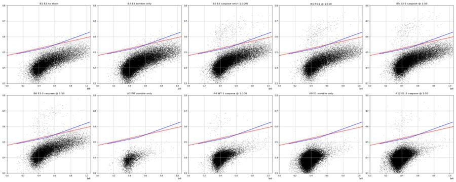
79
tool call · Bash
cd /task/work; cat > /task/work/sing.py <<'EOF'
import pandas as pd, numpy as np
data=pd.read_pickle('/task/work/data.pkl')
lay = pd.read_csv('/task/inputs/plate_layout.csv')
bins=[1e5,2e5,3e5,4e5,5e5,6e5,7e5,8e5,9e5,1.04e6]
for g,ws in {'WT':['A1','A2','A3','A4','A5','A6'],'E1':['A7','A8','A9','A10','A11','A12'],'E3':['B1','B2','B3','B4','B5','B6']}.items():
d=pd.concat([data[w] for w in ws]); d=d[(d['SSC-A']<1.04e6)&(d['FSC-A']<1.04e6)&(d['FSC-A']>1e5)]
d['ratio']=d['FSC-H']/d['FSC-A']; d['fb']=pd.cut(d['FSC-A'],bins)
q=d.groupby('fb',observed=False)['ratio'].quantile([0.005,0.02,0.1,0.5,0.9,0.99,0.999]).unstack().round(3)
q['n']=d.groupby('fb',observed=False).size()
print(g); print(q)
# FSC-A histogram low range
for w in ['A4','A10','B4','A1']:
h,e=np.histogram(data[w]['FSC-A'],bins=np.arange(0,4e5,2e4)); print(w, list(zip((e[:-1]/1e3).astype(int),h)))
EOF
python -I sing.py80
tool output
WT
0.005 0.02 0.1 0.5 0.9 0.99 0.999 n
fb
(100000.0, 200000.0] 0.358 0.406 0.537 0.747 0.892 0.941 0.962 762
(200000.0, 300000.0] 0.365 0.416 0.468 0.536 0.626 0.754 0.806 1793
(300000.0, 400000.0] 0.391 0.419 0.455 0.512 0.563 0.604 0.634 31456
(400000.0, 500000.0] 0.379 0.399 0.432 0.488 0.538 0.581 0.636 24315
(500000.0, 600000.0] 0.334 0.364 0.412 0.482 0.544 0.626 0.667 6635
(600000.0, 700000.0] 0.285 0.312 0.354 0.461 0.549 0.624 0.653 1963
(700000.0, 800000.0] 0.251 0.259 0.300 0.419 0.515 0.590 0.606 731
(800000.0, 900000.0] 0.230 0.245 0.277 0.376 0.477 0.550 0.589 367
(900000.0, 1040000.0] 0.205 0.220 0.251 0.354 0.464 0.529 0.540 207
E1
0.005 0.02 0.1 0.5 0.9 0.99 0.999 n
fb
(100000.0, 200000.0] 0.283 0.350 0.455 0.640 0.853 0.922 0.960 3950
(200000.0, 300000.0] 0.345 0.372 0.446 0.520 0.597 0.713 0.803 19465
(300000.0, 400000.0] 0.367 0.399 0.441 0.500 0.556 0.603 0.635 158001
(400000.0, 500000.0] 0.364 0.387 0.418 0.470 0.522 0.565 0.604 88627
(500000.0, 600000.0] 0.303 0.341 0.396 0.468 0.526 0.594 0.650 13514
(600000.0, 700000.0] 0.248 0.266 0.306 0.447 0.534 0.616 0.664 2941
(700000.0, 800000.0] 0.226 0.234 0.255 0.347 0.513 0.589 0.624 1542
(800000.0, 900000.0] 0.210 0.226 0.245 0.304 0.472 0.564 0.611 813
(900000.0, 1040000.0] 0.182 0.210 0.236 0.302 0.452 0.534 0.566 412
E3
0.005 0.02 0.1 0.5 0.9 0.99 0.999 n
fb
(100000.0, 200000.0] 0.326 0.420 0.568 0.814 0.914 0.952 0.995 2439
(200000.0, 300000.0] 0.332 0.368 0.437 0.522 0.681 0.806 0.838 3857
(300000.0, 400000.0] 0.355 0.392 0.439 0.498 0.553 0.603 0.658 43431
(400000.0, 500000.0] 0.352 0.385 0.427 0.483 0.531 0.571 0.607 53293
(500000.0, 600000.0] 0.325 0.368 0.417 0.476 0.525 0.573 0.635 30354
(600000.0, 700000.0] 0.299 0.347 0.410 0.473 0.521 0.575 0.633 19781
(700000.0, 800000.0] 0.268 0.317 0.400 0.465 0.510 0.558 0.611 12971
(800000.0, 900000.0] 0.255 0.294 0.387 0.451 0.496 0.544 0.583 7568
(900000.0, 1040000.0] 0.240 0.274 0.366 0.435 0.477 0.513 0.546 4968
A4 [(0, 0), (20, 343), (40, 201), (60, 107), (80, 77), (100, 52), (120, 50), (140, 57), (160, 33), (180, 32), (200, 22), (220, 46), (240, 65), (260, 122), (280, 263), (300, 614), (320, 1173), (340, 2099), (360, 2523)]
A10 [(0, 0), (20, 446), (40, 361), (60, 261), (80, 199), (100, 144), (120, 142), (140, 154), (160, 133), (180, 158), (200, 210), (220, 244), (240, 480), (260, 1007), (280, 2139), (300, 3641), (320, 5777), (340, 7393), (360, 7858)]
B4 [(0, 0), (20, 689), (40, 485), (60, 277), (80, 154), (100, 109), (120, 70), (140, 63), (160, 55), (180, 44), (200, 43), (220, 61), (240, 61), (260, 112), (280, 196), (300, 392), (320, 740), (340, 1152), (360, 1532)]
A1 [(0, 0), (20, 224), (40, 138), (60, 90), (80, 50), (100, 23), (120, 22), (140, 15), (160, 10), (180, 7), (200, 18), (220, 5), (240, 11), (260, 32), (280, 59), (300, 187), (320, 370), (340, 642), (360, 847)]82
tool call · Bash
cd /task/work; cat > /task/work/rl3.py <<'EOF'
import pandas as pd, numpy as np
data=pd.read_pickle('/task/work/data.pkl')
bins=[1.2e5,2e5,3e5,4e5,5e5,6e5,8e5,1.04e6]
edges=np.round(np.arange(0.70,0.90,0.01),2)
for g,ws in {'WT':['A3','A4','A5','A6'],'E1':['A9','A10','A11','A12'],'E3':['B3','B4','B5','B6']}.items():
d=pd.concat([data[w] for w in ws]); d=d[(d['SSC-A']<1.04e6)&(d['FSC-A']<1.04e6)&(d['FSC-A']>1.2e5)&(d['FSC-H']>0.37*d['FSC-A'])]
d['fb']=pd.cut(d['FSC-A'],bins)
print(g)
for fb,dd in d.groupby('fb',observed=False):
h,_=np.histogram(dd.r,bins=edges)
print(' ',fb, 'n',len(dd), 'q99 live?', np.round(dd.r.quantile([0.5,0.9,0.95]).values,3), 'hist 0.70..0.89:', h)
EOF
python -I rl3.py83
tool output
WT
(120000.0, 200000.0] n 434 q99 live? [0.7 0.913 0.942] hist 0.70..0.89: [ 5 5 3 4 6 7 6 7 8 9 15 7 17 14 15 10 6 7 5 9]
(200000.0, 300000.0] n 1585 q99 live? [0.662 0.917 0.968] hist 0.70..0.89: [32 24 12 16 6 8 11 7 4 8 10 13 12 14 13 13 14 14 21 14]
(300000.0, 400000.0] n 27258 q99 live? [0.663 0.698 0.712] hist 0.70..0.89: [986 478 219 135 78 76 55 41 36 35 36 27 19 24 31 25 13 12
19 11]
(400000.0, 500000.0] n 20812 q99 live? [0.688 0.716 0.724] hist 0.70..0.89: [2817 1730 812 307 98 57 29 26 15 14 16 18 8 11
9 8 11 4 3 8]
(500000.0, 600000.0] n 5667 q99 live? [0.708 0.733 0.741] hist 0.70..0.89: [1076 1131 786 390 170 64 15 13 8 8 7 1 5 2
3 3 6 1 0 2]
(600000.0, 800000.0] n 1945 q99 live? [0.727 0.753 0.762] hist 0.70..0.89: [218 306 354 358 264 119 69 20 9 5 2 4 3 2 2 0 0 1
0 2]
(800000.0, 1040000.0] n 262 q99 live? [0.755 0.781 0.789] hist 0.70..0.89: [ 4 11 12 22 48 58 54 22 20 5 1 0 0 1 1 2 0 0 0 0]
E1
(120000.0, 200000.0] n 2253 q99 live? [0.835 0.94 0.963] hist 0.70..0.89: [ 28 33 21 20 17 27 23 25 32 26 44 50 42 69 73 88 98 106
95 79]
(200000.0, 300000.0] n 14158 q99 live? [0.674 0.89 0.947] hist 0.70..0.89: [546 375 211 160 114 83 89 70 94 87 92 113 105 115 139 157 163 157
154 123]
(300000.0, 400000.0] n 112265 q99 live? [0.674 0.709 0.722] hist 0.70..0.89: [7875 4279 1952 971 590 356 280 246 181 177 138 139 140 111
96 97 77 66 51 59]
(400000.0, 500000.0] n 60661 q99 live? [0.694 0.72 0.728] hist 0.70..0.89: [10377 6796 3379 1235 426 177 123 81 74 34 39 50
34 29 29 21 10 14 16 11]
(500000.0, 600000.0] n 8864 q99 live? [0.713 0.737 0.745] hist 0.70..0.89: [1708 2010 1557 840 345 126 48 24 27 11 10 12 7 5
6 4 7 2 3 4]
(600000.0, 800000.0] n 1968 q99 live? [0.734 0.761 0.772] hist 0.70..0.89: [109 260 347 403 323 223 104 53 22 8 3 5 2 3 1 2 1 4
1 1]
(800000.0, 1040000.0] n 252 q99 live? [0.763 0.789 0.812] hist 0.70..0.89: [ 0 1 5 11 38 52 65 37 18 7 5 2 1 1 1 0 1 1 1 0]
E3
(120000.0, 200000.0] n 1093 q99 live? [0.586 0.965 0.994] hist 0.70..0.89: [ 7 4 4 12 9 7 6 10 8 4 5 5 9 11 6 11 5 8 16 16]
(200000.0, 300000.0] n 2465 q99 live? [0.69 0.956 0.985] hist 0.70..0.89: [153 99 66 41 41 19 19 13 19 15 13 10 14 15 9 19 16 24
16 13]
(300000.0, 400000.0] n 29482 q99 live? [0.69 0.729 0.75 ] hist 0.70..0.89: [3427 2481 1554 871 526 313 209 118 65 73 60 53 35 49
34 38 41 29 23 21]
(400000.0, 500000.0] n 36080 q99 live? [0.708 0.742 0.755] hist 0.70..0.89: [5713 5384 4282 3001 1629 870 481 253 145 116 64 56 53 49
38 29 25 17 20 21]
(500000.0, 600000.0] n 20387 q99 live? [0.729 0.759 0.77 ] hist 0.70..0.89: [2178 3103 3574 3443 2677 1667 882 400 195 93 60 45 39 37
23 18 9 20 14 5]
(600000.0, 800000.0] n 21720 q99 live? [0.747 0.775 0.785] hist 0.70..0.89: [ 439 1262 2411 3663 4267 3717 2778 1512 696 285 144 107 48 53
45 27 21 19 15 13]
(800000.0, 1040000.0] n 7958 q99 live? [0.766 0.791 0.801] hist 0.70..0.89: [ 0 21 108 421 966 1462 1619 1484 1000 445 193 86 36 16
21 22 8 10 5 5]85
agent
Gate boundaries are settled. Building the FlowKit GatingStrategy now (Cells → Singlets → Live/Dead → Caspase_pos), then exporting it and checking it reloads.
86
tool call · Bash
mkdir -p /task/outputs; cd /task/work; cat > /task/work/build_gates.py <<'EOF'
import flowkit as fk, numpy as np
xf = fk.transforms.LogicleTransform(param_t=1048576, param_w=0.5, param_m=6.0, param_a=0)
print('logicle(-12954)=', xf.apply(np.array([-12954.,-3371.])))
gs = fk.GatingStrategy()
gs.add_transform('logicle', xf)
def lin(ch): return fk.Dimension(ch, compensation_ref='uncompensated', transformation_ref=None)
def lg(ch): return fk.Dimension(ch, compensation_ref='uncompensated', transformation_ref='logicle')
SAT = 1.04e6
# 1. Cells: exclude debris (FSC-A < 1.2e5) and events at the FSC-A / SSC-A ceiling
cells = fk.gates.PolygonGate('Cells', [lin('FSC-A'), lin('SSC-A')],
[(1.2e5, 1.0e4), (1.2e5, 6.0e5), (4.0e5, SAT), (SAT, SAT), (SAT, 1.0e4)])
gs.add_gate(cells, gate_path=('root',))
# 2. Singlets: FSC-H / FSC-A >= ~0.36-0.38
sing = fk.gates.PolygonGate('Singlets', [lin('FSC-A'), lin('FSC-H')],
[(1.2e5, 4.6e4), (4.0e5, 1.52e5), (SAT, 3.74e5), (SAT, 7.0e5), (1.2e5, 1.3e5)])
gs.add_gate(sing, gate_path=('root','Cells'))
# 3. Live / Dead: Zombie NIR (RL3-A) boundary sloped with FSC-A
LD = [(1.2e5, 0.75), (4.0e5, 0.76), (SAT, 0.835)]
live = fk.gates.PolygonGate('Live', [lin('FSC-A'), lg('RL3-A')],
[(1.2e5, -2.0)] + LD + [(SAT, -2.0)])
gs.add_gate(live, gate_path=('root','Cells','Singlets'))
dead = fk.gates.PolygonGate('Dead', [lin('FSC-A'), lg('RL3-A')],
LD + [(SAT, 1.2), (1.2e5, 1.2)])
gs.add_gate(dead, gate_path=('root','Cells','Singlets'))
# 4. Cleaved caspase-3 AF488 (BL1-A) positive: boundary sloped with FSC-A (autofluorescence scales with size)
CB = [(1.2e5, 0.49), (5.0e5, 0.53), (SAT, 0.63)]
cpos = fk.gates.PolygonGate('Caspase_pos', [lin('FSC-A'), lg('BL1-A')], CB + [(SAT, 1.2), (1.2e5, 1.2)])
gs.add_gate(cpos, gate_path=('root','Cells','Singlets','Live'))
dcpos = fk.gates.PolygonGate('Dead_Caspase_pos', [lin('FSC-A'), lg('BL1-A')], CB + [(SAT, 1.2), (1.2e5, 1.2)])
gs.add_gate(dcpos, gate_path=('root','Cells','Singlets','Dead'))
with open('/task/outputs/gates.xml','wb') as fh:
fk.export_gatingml(gs, fh)
gs2 = fk.parse_gating_xml('/task/outputs/gates.xml')
print(gs2.get_gate_ids())
EOF
python -I build_gates.py87
tool output
logicle(-12954)= [-0.5152258 -0.41757703]
[('Cells', ('root',)), ('Singlets', ('root', 'Cells')), ('Live', ('root', 'Cells', 'Singlets')), ('Caspase_pos', ('root', 'Cells', 'Singlets', 'Live')), ('Dead', ('root', 'Cells', 'Singlets')), ('Dead_Caspase_pos', ('root', 'Cells', 'Singlets', 'Dead'))]89
tool call · Bash
cd /task/work; cat > /task/work/count.py <<'EOF'
import flowkit as fk, pandas as pd, numpy as np
lay = pd.read_csv('/task/inputs/plate_layout.csv')
gs = fk.parse_gating_xml('/task/outputs/gates.xml')
pops = [('all_events','other','none'),('Cells','cells','all_events'),('Singlets','singlets','Cells'),
('Live','live','Singlets'),('Caspase_pos','marker_positive','Live'),('Dead','other','Singlets'),('Dead_Caspase_pos','other','Dead')]
rows=[]
for _,r in lay.iterrows():
s = fk.Sample('/task/inputs/raw/'+r.file)
res = gs.gate_sample(s)
rep = res.report
cnt={'all_events': s.event_count}
for g,path in gs.get_gate_ids():
cnt[g]=int(res.get_gate_count(g, gate_path=path))
for p,role,par in pops:
c=cnt[p]; pc = '' if par=='none' else (round(100*c/cnt[par],4) if cnt[par]>0 else '')
rows.append(dict(file=r.file,well=r.well,population=p,role=role,parent=par,count=c,pct_of_parent=pc))
df=pd.DataFrame(rows)
df.to_csv('/task/outputs/counts.csv',index=False)
w=df.pivot(index='well',columns='population',values='count').reindex(lay.well)[[p for p,_,_ in pops]]
w['%sing_of_cells']=(100*w.Singlets/w.Cells).round(1); w['%dead']=(100*w.Dead/w.Singlets).round(2); w['%casp_live']=(100*w.Caspase_pos/w.Live).round(3)
w['%casp_dead']=(100*w.Dead_Caspase_pos/w.Dead).round(2)
w['%casp_sing']=(100*(w.Caspase_pos+w.Dead_Caspase_pos)/w.Singlets).round(3)
w.insert(0,'sample',lay.set_index('well')['sample'])
pd.set_option('display.width',250); print(w.to_string())
EOF
python -I count.py90
tool output
population sample all_events Cells Singlets Live Caspase_pos Dead Dead_Caspase_pos %sing_of_cells %dead %casp_live %casp_dead %casp_sing well A1 WT no stain 6969 6426 6346 6346 0 0 0 98.8 0.00 0.000 NaN 0.000 A2 WT caspase only (1:100) 3149 2595 2569 2569 27 0 0 99.0 0.00 1.051 NaN 1.051 A3 WT zombie only 5742 5231 5170 5063 1 107 1 98.8 2.07 0.020 0.93 0.039 A4 WT-1 caspase @ 1:100 20776 19898 19481 19046 101 435 2 97.9 2.23 0.530 0.46 0.529 A5 WT-2 caspase @ 1:50 13119 12669 12456 12268 88 188 3 98.3 1.51 0.717 1.60 0.731 A6 WT-3 caspase @ 1:50 21946 21178 20806 20226 139 580 9 98.2 2.79 0.687 1.55 0.711 A7 E1 no stain 33911 32834 32296 32296 11 0 0 98.4 0.00 0.034 NaN 0.034 A8 E1 caspase only (1:100) 52749 51495 50320 50320 117 0 0 97.7 0.00 0.233 NaN 0.233 A9 E1 zombie only 49297 47925 46912 45226 12 1686 0 97.9 3.59 0.027 0.00 0.026 A10 E1-1 caspase @ 1:100 58936 57422 56046 54041 123 2005 9 97.6 3.58 0.228 0.45 0.236 A11 E1-2 caspase @1:50 51193 49578 48518 46883 128 1635 9 97.9 3.37 0.273 0.55 0.282 A12 E1-3 caspase @ 1:50 51047 49147 48156 46063 192 2093 8 98.0 4.35 0.417 0.38 0.415 B1 E3 no stain 26935 23680 23136 23136 47 0 0 97.7 0.00 0.203 NaN 0.203 B2 E3 caspase only (1:100) 36048 32094 31343 31343 513 0 0 97.7 0.00 1.637 NaN 1.637 B3 E3 zombie only 46022 41048 39971 38520 86 1451 18 97.4 3.63 0.223 1.24 0.260 B4 E3-1 @ 1:100 27503 24459 23887 22672 378 1215 49 97.7 5.09 1.667 4.03 1.788 B5 E3-2 caspase @ 1:50 37596 34182 33315 32120 404 1195 33 97.5 3.59 1.258 2.76 1.312 B6 E3-3 caspase @ 1:50 24797 22416 21903 20830 245 1073 35 97.7 4.90 1.176 3.26 1.278
92
tool call · Bash
cd /task/work; cat > /task/work/tune.py <<'EOF'
import flowkit as fk, pandas as pd, numpy as np
lay = pd.read_csv('/task/inputs/plate_layout.csv')
gs = fk.parse_gating_xml('/task/outputs/gates.xml')
live={}
for _,r in lay.iterrows():
s = fk.Sample('/task/inputs/raw/'+r.file)
res = gs.gate_sample(s)
m = res.get_gate_membership('Live', gate_path=('root','Cells','Singlets'))
df = s.as_dataframe(source='raw'); df.columns=df.columns.get_level_values(0)
live[r.well]=df[m]
pd.to_pickle(live,'/task/work/live.pkl')
xf = fk.transforms.LogicleTransform(param_t=1048576, param_w=0.5, param_m=6.0, param_a=0)
cands = {'v1 .49/.53/.63':(0.49,0.53,0.63),'v2 .50/.545/.64':(0.50,0.545,0.64),'v3 .50/.55/.65':(0.50,0.55,0.65),'v4 .51/.56/.65':(0.51,0.56,0.65),'v5 .52/.57/.66':(0.52,0.57,0.66)}
out={}
for nm,(a,b,c) in cands.items():
col={}
for w,d in live.items():
f=d['FSC-A'].values; y=xf.apply(d['BL1-A'].values)
thr=np.where(f<5e5, a+(b-a)*(f-1.2e5)/(3.8e5), b+(c-b)*(f-5e5)/(5.4e5))
col[w]=round(100*(y>thr).mean(),3)
out[nm]=col
o=pd.DataFrame(out); o.insert(0,'sample',lay.set_index('well')['sample']); print(o.to_string())
EOF
python -I tune.py93
tool output
sample v1 .49/.53/.63 v2 .50/.545/.64 v3 .50/.55/.65 v4 .51/.56/.65 v5 .52/.57/.66 A1 WT no stain 0.000 0.000 0.000 0.000 0.000 A2 WT caspase only (1:100) 1.051 1.051 1.012 0.934 0.895 A3 WT zombie only 0.020 0.000 0.000 0.000 0.000 A4 WT-1 caspase @ 1:100 0.530 0.504 0.494 0.467 0.431 A5 WT-2 caspase @ 1:50 0.717 0.668 0.660 0.644 0.611 A6 WT-3 caspase @ 1:50 0.687 0.638 0.623 0.598 0.593 A7 E1 no stain 0.034 0.012 0.012 0.009 0.003 A8 E1 caspase only (1:100) 0.233 0.203 0.199 0.189 0.177 A9 E1 zombie only 0.027 0.011 0.007 0.004 0.002 A10 E1-1 caspase @ 1:100 0.228 0.211 0.209 0.200 0.189 A11 E1-2 caspase @1:50 0.273 0.252 0.250 0.243 0.224 A12 E1-3 caspase @ 1:50 0.417 0.382 0.378 0.352 0.321 B1 E3 no stain 0.203 0.104 0.069 0.056 0.030 B2 E3 caspase only (1:100) 1.637 1.394 1.356 1.241 1.168 B3 E3 zombie only 0.223 0.093 0.062 0.047 0.029 B4 E3-1 @ 1:100 1.667 1.473 1.442 1.328 1.244 B5 E3-2 caspase @ 1:50 1.258 1.034 0.981 0.912 0.847 B6 E3-3 caspase @ 1:50 1.176 1.018 0.989 0.927 0.869
95
tool call · Bash
cd /task/work; sed -i "s/CB = \[(1.2e5, 0.49), (5.0e5, 0.53), (SAT, 0.63)\]/CB = [(1.2e5, 0.50), (5.0e5, 0.55), (SAT, 0.65)]/" build_gates.py && grep -n "CB =" build_gates.py && python -I build_gates.py && python -I count.py
96
tool output
26:CB = [(1.2e5, 0.50), (5.0e5, 0.55), (SAT, 0.65)]
logicle(-12954)= [-0.5152258 -0.41757703]
[('Cells', ('root',)), ('Singlets', ('root', 'Cells')), ('Live', ('root', 'Cells', 'Singlets')), ('Caspase_pos', ('root', 'Cells', 'Singlets', 'Live')), ('Dead', ('root', 'Cells', 'Singlets')), ('Dead_Caspase_pos', ('root', 'Cells', 'Singlets', 'Dead'))]
population sample all_events Cells Singlets Live Caspase_pos Dead Dead_Caspase_pos %sing_of_cells %dead %casp_live %casp_dead %casp_sing
well
A1 WT no stain 6969 6426 6346 6346 0 0 0 98.8 0.00 0.000 NaN 0.000
A2 WT caspase only (1:100) 3149 2595 2569 2569 26 0 0 99.0 0.00 1.012 NaN 1.012
A3 WT zombie only 5742 5231 5170 5063 0 107 0 98.8 2.07 0.000 0.00 0.000
A4 WT-1 caspase @ 1:100 20776 19898 19481 19046 94 435 1 97.9 2.23 0.494 0.23 0.488
A5 WT-2 caspase @ 1:50 13119 12669 12456 12268 81 188 3 98.3 1.51 0.660 1.60 0.674
A6 WT-3 caspase @ 1:50 21946 21178 20806 20226 126 580 8 98.2 2.79 0.623 1.38 0.644
A7 E1 no stain 33911 32834 32296 32296 4 0 0 98.4 0.00 0.012 NaN 0.012
A8 E1 caspase only (1:100) 52749 51495 50320 50320 100 0 0 97.7 0.00 0.199 NaN 0.199
A9 E1 zombie only 49297 47925 46912 45226 3 1686 0 97.9 3.59 0.007 0.00 0.006
A10 E1-1 caspase @ 1:100 58936 57422 56046 54041 113 2005 6 97.6 3.58 0.209 0.30 0.212
A11 E1-2 caspase @1:50 51193 49578 48518 46883 117 1635 5 97.9 3.37 0.250 0.31 0.251
A12 E1-3 caspase @ 1:50 51047 49147 48156 46063 174 2093 4 98.0 4.35 0.378 0.19 0.370
B1 E3 no stain 26935 23680 23136 23136 16 0 0 97.7 0.00 0.069 NaN 0.069
B2 E3 caspase only (1:100) 36048 32094 31343 31343 425 0 0 97.7 0.00 1.356 NaN 1.356
B3 E3 zombie only 46022 41048 39971 38520 24 1451 10 97.4 3.63 0.062 0.69 0.085
B4 E3-1 @ 1:100 27503 24459 23887 22672 327 1215 36 97.7 5.09 1.442 2.96 1.520
B5 E3-2 caspase @ 1:50 37596 34182 33315 32120 315 1195 21 97.5 3.59 0.981 1.76 1.009
B6 E3-3 caspase @ 1:50 24797 22416 21903 20830 206 1073 27 97.7 4.90 0.989 2.52 1.06498
tool call · Bash
cd /task/work; cat > /task/work/sizematch.py <<'EOF'
import flowkit as fk, pandas as pd, numpy as np
lay = pd.read_csv('/task/inputs/plate_layout.csv').set_index('well')
gs = fk.parse_gating_xml('/task/outputs/gates.xml')
rows=[]
for w,r in lay.iterrows():
s = fk.Sample('/task/inputs/raw/'+r.file); res=gs.gate_sample(s)
df = s.as_dataframe(source='raw'); df.columns=df.columns.get_level_values(0)
L = res.get_gate_membership('Live', gate_path=('root','Cells','Singlets'))
P = res.get_gate_membership('Caspase_pos', gate_path=('root','Cells','Singlets','Live'))
f=df['FSC-A'].values; ssc=df['SSC-A'].values; b=df['BL1-A'].values
win=(f>3e5)&(f<5e5)
rows.append(dict(well=w,sample=r['sample'],live=L.sum(),pct=round(100*P.sum()/L.sum(),3),
live_3to5=(L&win).sum(), pct_3to5=round(100*(P&win).sum()/(L&win).sum(),3),
frac_live_in_window=round((L&win).sum()/L.sum(),3),
pos_med_FSC=int(np.median(f[P])) if P.sum() else None, neg_med_FSC=int(np.median(f[L&~P])),
pos_med_SSC=int(np.median(ssc[P])) if P.sum() else None, neg_med_SSC=int(np.median(ssc[L&~P])),
pos_med_BL1=int(np.median(b[P])) if P.sum() else None, neg_med_BL1=int(np.median(b[L&~P]))))
pd.set_option('display.width',250); print(pd.DataFrame(rows).to_string())
EOF
python -I sizematch.py99
tool output
well sample live pct live_3to5 pct_3to5 frac_live_in_window pos_med_FSC neg_med_FSC pos_med_SSC neg_med_SSC pos_med_BL1 neg_med_BL1 0 A1 WT no stain 6346 0.000 5398 0.000 0.851 NaN 401754 NaN 262402 NaN 252 1 A2 WT caspase only (1:100) 2569 1.012 2187 0.732 0.851 358544.0 396744 186358.0 260312 3897.0 287 2 A3 WT zombie only 5063 0.000 4325 0.000 0.854 NaN 397524 NaN 266985 NaN 243 3 A4 WT-1 caspase @ 1:100 19046 0.494 15848 0.366 0.832 352697.0 402806 222072.0 284322 4894.0 289 4 A5 WT-2 caspase @ 1:50 12268 0.660 10150 0.512 0.827 391918.0 405343 246596.0 276632 5743.0 312 5 A6 WT-3 caspase @ 1:50 20226 0.623 16998 0.482 0.840 380984.0 396582 237487.0 289908 6440.0 320 6 A7 E1 no stain 32296 0.012 28218 0.011 0.874 448961.0 381282 490726.0 283102 2515.0 262 7 A8 E1 caspase only (1:100) 50320 0.199 43690 0.119 0.868 382727.0 384108 190902.0 290943 4585.0 275 8 A9 E1 zombie only 45226 0.007 40061 0.005 0.886 371505.0 378429 430624.0 294072 2414.0 256 9 A10 E1-1 caspase @ 1:100 54041 0.209 47616 0.143 0.881 360475.0 379543 193751.0 294515 4464.0 279 10 A11 E1-2 caspase @1:50 46883 0.250 41144 0.175 0.878 352969.0 383281 177631.0 293455 4819.0 295 11 A12 E1-3 caspase @ 1:50 46063 0.378 40572 0.249 0.881 337725.0 378105 176323.0 291274 4540.0 292 12 B1 E3 no stain 23136 0.069 12427 0.040 0.537 534151.0 467989 625088.0 387358 3173.0 396 13 B2 E3 caspase only (1:100) 31343 1.356 17580 1.217 0.561 426467.0 463383 318190.0 382238 5334.0 442 14 B3 E3 zombie only 38520 0.062 21065 0.014 0.547 629436.0 471022 705678.0 387580 3721.0 392 15 B4 E3-1 @ 1:100 22672 1.442 12176 1.503 0.537 439973.0 476352 292611.0 379266 4674.0 422 16 B5 E3-2 caspase @ 1:50 32120 0.981 18046 0.920 0.562 432090.0 466855 283800.0 388246 5916.0 469 17 B6 E3-3 caspase @ 1:50 20830 0.989 11732 0.810 0.563 447780.0 463231 290938.0 388571 5530.0 462
101
thinking
Zombie-only background stays at or below 0.07% caspase-positive, and the stained wells show a clear BL1-bright population. Next I'm checking the gate overlays and measuring E3 scatter saturation.
102
tool call · Bash
cd /task/work; cat > /task/work/overlay.py <<'EOF'
import flowkit as fk, pandas as pd, numpy as np, matplotlib
matplotlib.use('Agg'); import matplotlib.pyplot as plt
lay = pd.read_csv('/task/inputs/plate_layout.csv')
gs = fk.parse_gating_xml('/task/outputs/gates.xml')
xf = fk.transforms.LogicleTransform(param_t=1048576, param_w=0.5, param_m=6.0, param_a=0)
def verts(name, path):
g = gs.get_gate(name, gate_path=path); v=np.array(g.vertices); return np.vstack([v,v[:1]])
P=('root',); C=('root','Cells'); S=('root','Cells','Singlets'); L=('root','Cells','Singlets','Live')
fig, axes = plt.subplots(18,4, figsize=(18,80))
sat=[]
for i,r in lay.iterrows():
s = fk.Sample('/task/inputs/raw/'+r.file); res=gs.gate_sample(s)
df = s.as_dataframe(source='raw'); df.columns=df.columns.get_level_values(0)
mc=res.get_gate_membership('Cells',gate_path=P); ms=res.get_gate_membership('Singlets',gate_path=C)
ml=res.get_gate_membership('Live',gate_path=S); mp=res.get_gate_membership('Caspase_pos',gate_path=L)
satm=(df['FSC-A']>=1048575)|(df['SSC-A']>=1048575)
sat.append((r.well, int(satm.sum()), round(100*satm.mean(),2)))
ax=axes[i]; kw=dict(bins=200,cmap='jet',norm=matplotlib.colors.LogNorm())
ax[0].hist2d(df['FSC-A'],df['SSC-A'],range=[[0,1.05e6],[0,1.05e6]],**kw); v=verts('Cells',P); ax[0].plot(v[:,0],v[:,1],'k-',lw=2); ax[0].set_title(f"{r.well} {r['sample']}: Cells {mc.sum()}/{len(df)}",fontsize=9)
d=df[mc]; ax[1].hist2d(d['FSC-A'],d['FSC-H'],range=[[0,1.05e6],[0,6e5]],**kw); v=verts('Singlets',C); ax[1].plot(v[:,0],v[:,1],'k-',lw=2); ax[1].set_title(f"Singlets {ms.sum()}",fontsize=9)
d=df[ms]; ax[2].hist2d(d['FSC-A'],xf.apply(d['RL3-A'].values),range=[[0,1.05e6],[0,1.05]],**kw)
for nm in ['Live','Dead']:
v=verts(nm,S); v[:,1]=np.clip(v[:,1],0,1.04); ax[2].plot(v[:,0],v[:,1],'k-',lw=2)
ax[2].set_title(f"Live {ml.sum()} Dead {ms.sum()-ml.sum()} (RL3 Zombie NIR)",fontsize=9)
d=df[ml]; ax[3].hist2d(d['FSC-A'],xf.apply(d['BL1-A'].values),range=[[0,1.05e6],[0.2,0.9]],**kw); v=verts('Caspase_pos',L); v[:,1]=np.clip(v[:,1],0,0.89); ax[3].plot(v[:,0],v[:,1],'k-',lw=2)
ax[3].set_title(f"Caspase_pos {mp.sum()} = {100*mp.sum()/ml.sum():.2f}% of Live (BL1)",fontsize=9)
plt.tight_layout(); plt.savefig('/task/work/overlay.png',dpi=40)
from PIL import Image
im=Image.open('/task/work/overlay.png'); w,h=im.size
for k in range(3): im.crop((0,k*h//3,w,(k+1)*h//3)).save(f'/task/work/overlay_{k}.png')
print(sat)
EOF
python -I overlay.py103
tool output
[('A1', 20, 0.29), ('A2', 12, 0.38), ('A3', 19, 0.33), ('A4', 96, 0.46), ('A5', 31, 0.24), ('A6', 57, 0.26), ('A7', 42, 0.12), ('A8', 73, 0.14), ('A9', 62, 0.13), ('A10', 97, 0.16), ('A11', 78, 0.15), ('A12', 68, 0.13), ('B1', 1190, 4.42), ('B2', 1470, 4.08), ('B3', 2286, 4.97), ('B4', 1283, 4.66), ('B5', 1843, 4.9), ('B6', 986, 3.98)]104
tool call · Read
{
"file_path": "/task/work/overlay_0.png"
}105
tool output
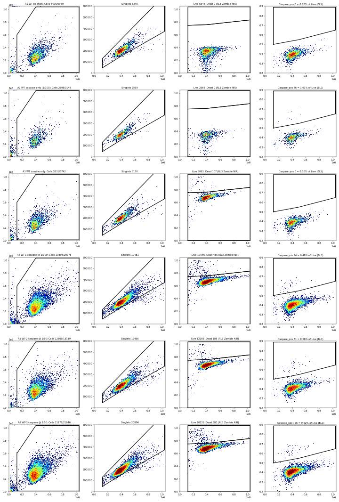
106
tool call · Read
{
"file_path": "/task/work/overlay_2.png"
}107
tool output
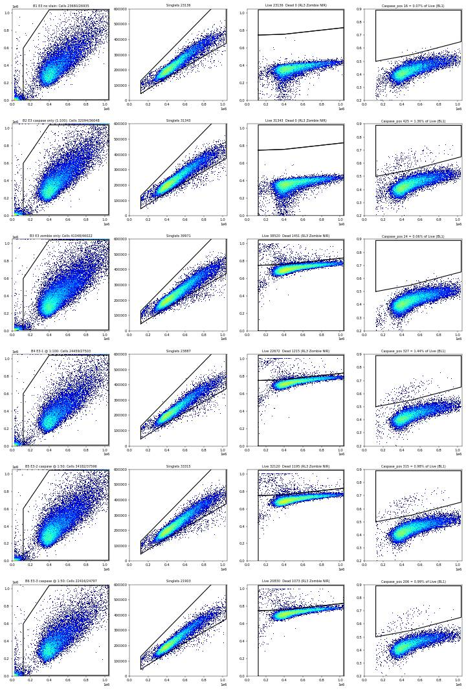
109
tool call · Bash
cd /task/work; sed -i "s/LD = \[(1.2e5, 0.75), (4.0e5, 0.76), (SAT, 0.835)\]/LD = [(1.2e5, 0.75), (4.0e5, 0.765), (SAT, 0.855)]/" build_gates.py && grep -n "LD =" build_gates.py && python -I build_gates.py && python -I count.py && head -8 /task/outputs/counts.csv
110
tool output
18:LD = [(1.2e5, 0.75), (4.0e5, 0.765), (SAT, 0.855)]
logicle(-12954)= [-0.5152258 -0.41757703]
[('Cells', ('root',)), ('Singlets', ('root', 'Cells')), ('Live', ('root', 'Cells', 'Singlets')), ('Caspase_pos', ('root', 'Cells', 'Singlets', 'Live')), ('Dead', ('root', 'Cells', 'Singlets')), ('Dead_Caspase_pos', ('root', 'Cells', 'Singlets', 'Dead'))]
population sample all_events Cells Singlets Live Caspase_pos Dead Dead_Caspase_pos %sing_of_cells %dead %casp_live %casp_dead %casp_sing
well
A1 WT no stain 6969 6426 6346 6346 0 0 0 98.8 0.00 0.000 NaN 0.000
A2 WT caspase only (1:100) 3149 2595 2569 2569 26 0 0 99.0 0.00 1.012 NaN 1.012
A3 WT zombie only 5742 5231 5170 5069 0 101 0 98.8 1.95 0.000 0.00 0.000
A4 WT-1 caspase @ 1:100 20776 19898 19481 19061 94 420 1 97.9 2.16 0.493 0.24 0.488
A5 WT-2 caspase @ 1:50 13119 12669 12456 12275 81 181 3 98.3 1.45 0.660 1.66 0.674
A6 WT-3 caspase @ 1:50 21946 21178 20806 20248 127 558 7 98.2 2.68 0.627 1.25 0.644
A7 E1 no stain 33911 32834 32296 32296 4 0 0 98.4 0.00 0.012 NaN 0.012
A8 E1 caspase only (1:100) 52749 51495 50320 50320 100 0 0 97.7 0.00 0.199 NaN 0.199
A9 E1 zombie only 49297 47925 46912 45287 3 1625 0 97.9 3.46 0.007 0.00 0.006
A10 E1-1 caspase @ 1:100 58936 57422 56046 54114 114 1932 5 97.6 3.45 0.211 0.26 0.212
A11 E1-2 caspase @1:50 51193 49578 48518 46926 117 1592 5 97.9 3.28 0.249 0.31 0.251
A12 E1-3 caspase @ 1:50 51047 49147 48156 46111 174 2045 4 98.0 4.25 0.377 0.20 0.370
B1 E3 no stain 26935 23680 23136 23136 16 0 0 97.7 0.00 0.069 NaN 0.069
B2 E3 caspase only (1:100) 36048 32094 31343 31343 425 0 0 97.7 0.00 1.356 NaN 1.356
B3 E3 zombie only 46022 41048 39971 38729 25 1242 9 97.4 3.11 0.065 0.72 0.085
B4 E3-1 @ 1:100 27503 24459 23887 22946 336 941 27 97.7 3.94 1.464 2.87 1.520
B5 E3-2 caspase @ 1:50 37596 34182 33315 32238 320 1077 16 97.5 3.23 0.993 1.49 1.009
B6 E3-3 caspase @ 1:50 24797 22416 21903 21038 211 865 22 97.7 3.95 1.003 2.54 1.064
file,well,population,role,parent,count,pct_of_parent
Caspase_h4_mlk(4)_caspase_Group_A1_WT_no stain.fcs,A1,all_events,other,none,6969,
Caspase_h4_mlk(4)_caspase_Group_A1_WT_no stain.fcs,A1,Cells,cells,all_events,6426,92.2084
Caspase_h4_mlk(4)_caspase_Group_A1_WT_no stain.fcs,A1,Singlets,singlets,Cells,6346,98.7551
Caspase_h4_mlk(4)_caspase_Group_A1_WT_no stain.fcs,A1,Live,live,Singlets,6346,100.0
Caspase_h4_mlk(4)_caspase_Group_A1_WT_no stain.fcs,A1,Caspase_pos,marker_positive,Live,0,0.0
Caspase_h4_mlk(4)_caspase_Group_A1_WT_no stain.fcs,A1,Dead,other,Singlets,0,0.0
Caspase_h4_mlk(4)_caspase_Group_A1_WT_no stain.fcs,A1,Dead_Caspase_pos,other,Dead,0,112
agent
Counts are final and the Live+Dead gates add up to Singlets in every well. Now computing per-condition summaries, stain-index/titration metrics and simple statistics.
113
tool call · Bash
cd /task/work; cat > /task/work/stats.py <<'EOF'
import flowkit as fk, pandas as pd, numpy as np
from scipy import stats
lay = pd.read_csv('/task/inputs/plate_layout.csv').set_index('well')
gs = fk.parse_gating_xml('/task/outputs/gates.xml')
rows=[]
for w,r in lay.iterrows():
s = fk.Sample('/task/inputs/raw/'+r.file); res=gs.gate_sample(s)
df = s.as_dataframe(source='raw'); df.columns=df.columns.get_level_values(0)
L = res.get_gate_membership('Live', gate_path=('root','Cells','Singlets'))
P = res.get_gate_membership('Caspase_pos', gate_path=('root','Cells','Singlets','Live'))
b=df['BL1-A'].values; neg=b[L&~P]
mneg=np.median(neg); rsd=np.percentile(neg,84.13)-mneg
mpos=np.median(b[P]) if P.sum()>0 else np.nan
k=P.sum(); n=L.sum()
lo,hi = stats.beta.ppf(0.025,k,n-k+1) if k>0 else 0, stats.beta.ppf(0.975,k+1,n-k)
rows.append(dict(well=w,sample=r['sample'],n_live=n,n_pos=k,pct=100*k/n,ci_lo=100*lo,ci_hi=100*hi,MFI_neg=mneg,rSD_neg=rsd,MFI_pos=mpos,SI=(mpos-mneg)/(2*rsd)))
t=pd.DataFrame(rows).set_index('well'); pd.set_option('display.width',250)
print(t.round(3).to_string())
t.to_csv('/task/work/well_metrics.csv')
g={'WT':['A4','A5','A6'],'E1':['A10','A11','A12'],'E3':['B4','B5','B6']}
for a,b_ in [('WT','E1'),('WT','E3'),('E1','E3')]:
x=t.loc[g[a],'pct']; y=t.loc[g[b_],'pct']
print(a,b_, 'means',round(x.mean(),3),round(y.mean(),3),'ratio',round(y.mean()/x.mean(),2),'diff',round(y.mean()-x.mean(),3),'welch p',round(stats.ttest_ind(x,y,equal_var=False).pvalue,4))
for line,ws in g.items():
print(line,'1:100',t.loc[ws[0],'pct'].round(3),'1:50',t.loc[ws[1:],'pct'].round(3).tolist(),'mean1:50',round(t.loc[ws[1:],'pct'].mean(),3),'SI 1:100',round(t.loc[ws[0],'SI'],2),'SI 1:50',t.loc[ws[1:],'SI'].round(2).tolist())
EOF
python -I stats.py114
tool output
sample n_live n_pos pct ci_lo ci_hi MFI_neg rSD_neg MFI_pos SI well A1 WT no stain 6346 0 0.000 0.000 0.058 252.0 119.0 NaN NaN A2 WT caspase only (1:100) 2569 26 1.012 0.662 1.479 287.0 123.0 3897.0 14.675 A3 WT zombie only 5069 0 0.000 0.000 0.073 243.0 107.0 NaN NaN A4 WT-1 caspase @ 1:100 19061 94 0.493 0.399 0.603 289.0 129.0 4894.5 17.851 A5 WT-2 caspase @ 1:50 12275 81 0.660 0.524 0.820 312.0 137.0 5743.0 19.821 A6 WT-3 caspase @ 1:50 20248 127 0.627 0.523 0.746 320.0 137.0 6481.0 22.485 A7 E1 no stain 32296 4 0.012 0.003 0.032 262.0 107.0 2515.0 10.528 A8 E1 caspase only (1:100) 50320 100 0.199 0.162 0.242 275.0 115.0 4585.5 18.741 A9 E1 zombie only 45287 3 0.007 0.001 0.019 256.0 106.0 2414.0 10.179 A10 E1-1 caspase @ 1:100 54114 114 0.211 0.174 0.253 279.0 115.0 4471.5 18.228 A11 E1-2 caspase @1:50 46926 117 0.249 0.206 0.299 295.0 122.0 4819.0 18.541 A12 E1-3 caspase @ 1:50 46111 174 0.377 0.323 0.438 292.0 124.0 4540.0 17.129 B1 E3 no stain 23136 16 0.069 0.040 0.112 396.0 402.0 3173.5 3.455 B2 E3 caspase only (1:100) 31343 425 1.356 1.231 1.490 442.0 443.0 5334.0 5.521 B3 E3 zombie only 38729 25 0.065 0.042 0.095 393.0 414.0 3647.0 3.930 B4 E3-1 @ 1:100 22946 336 1.464 1.313 1.628 424.0 416.0 4713.5 5.156 B5 E3-2 caspase @ 1:50 32238 320 0.993 0.887 1.107 470.0 454.0 6010.5 6.102 B6 E3-3 caspase @ 1:50 21038 211 1.003 0.873 1.147 464.0 435.0 5580.0 5.880 WT E1 means 0.593 0.279 ratio 0.47 diff -0.314 welch p 0.0118 WT E3 means 0.593 1.153 ratio 1.94 diff 0.56 welch p 0.0575 E1 E3 means 0.279 1.153 ratio 4.13 diff 0.874 welch p 0.0218 WT 1:100 0.493 1:50 [0.66, 0.627] mean1:50 0.644 SI 1:100 17.85 SI 1:50 [19.82, 22.49] E1 1:100 0.211 1:50 [0.249, 0.377] mean1:50 0.313 SI 1:100 18.23 SI 1:50 [18.54, 17.13] E3 1:100 1.464 1:50 [0.993, 1.003] mean1:50 0.998 SI 1:100 5.16 SI 1:50 [6.1, 5.88]
116
thinking
Caspase+ stats are done: about 0.6% in WT, 0.28% in E1, 1.15% in E3, versus ≤0.07% in the Zombie-only FMOs, with no consistent dilution effect. I'm loading the dataviz skill before building the figure.
117
tool call · Skill
{
"skill": "dataviz"
}118
tool output
Launching skill: dataviz
119
tool call · Bash
cd /tmp/claude-0/bundled-skills/2.1.322/975816fa5446df09fee738b6c0165f57/dataviz; sed -n 1,200p references/palette.md | head -120; echo ----; grep -n -i -A3 "dot\|strip\|replicate" references/choosing-a-form.md | head -60
120
tool output
# Reference palette
This is the **reference instance** of the data-viz method: every parameter the
method needs, filled in with a validated default palette. The rest of the skill
is system-agnostic - **to target your brand, substitute this file's values** and
re-run the validator. Nothing else changes.
## How to use these values
Everything below is plain hex. In an HTML chart, **define the slots you use as
CSS custom properties in a local `<style>` block** at the top of the file, then
reference them by role throughout - so the light/dark values swap in one place,
and the chart body is written against roles rather than raw hex:
```css
.viz-root {
color-scheme: light;
--surface-1: #fcfcfb; /* chart surface */
--text-primary: #0b0b0b;
--text-secondary: #52514e;
--series-1: #2a78d6; /* categorical slot 1 */
/* ...only the roles this chart uses */
}
@media (prefers-color-scheme: dark) {
:root:where(:not([data-theme="light"])) .viz-root {
color-scheme: dark;
--surface-1: #1a1a19;
--text-primary: #f0efec;
--text-secondary: #c3c2b7;
--series-1: #3987e5;
}
}
:root[data-theme="dark"] .viz-root {
color-scheme: dark;
--surface-1: #1a1a19;
--text-primary: #f0efec;
--text-secondary: #c3c2b7;
--series-1: #3987e5;
}
```
Declare the dark values under both scopes as above - the media query covers
the OS setting; the `data-theme` scope covers the viewer's theme toggle,
which must win both ways (the `:not(...)` guard lets a light stamp beat
OS-dark; `:where()` keeps the media block below the toggle scope).
## Categorical palette
Both modes are selected. The dark column is the same eight hues stepped for the
dark surface, not a separate palette:
| Slot | Hue | Light | Dark |
|------|-----|-------|------|
| 1 | blue | `#2a78d6` | `#3987e5` |
| 2 | orange | `#eb6834` | `#d95926` |
| 3 | aqua | `#1baf7a` | `#199e70` |
| 4 | yellow | `#eda100` | `#c98500` |
| 5 | magenta | `#e87ba4` | `#d55181` |
| 6 | green | `#008300` | `#008300` |
| 7 | violet | `#6250d6` | `#9085e9` |
| 8 | red | `#e34948` | `#e66767` |
This order passes every hard gate in both modes on the default *adjacent*
pairlist (stacks, bars, lines): worst adjacent CVD Delta E 9.1 light / 8.4 dark
(OKLab ×100, >=8 target), worst adjacent normal-vision Delta E 19.6 light / 19.3
dark (>=15 floor). Under `--pairs all` (scatter, bubble, choropleth, small
multiples) the full eight cannot clear the floors - with all 28 pairs in
play no ordering can (the pairlist no longer depends on order), and
re-stepping is off the table by the documented-palette rule - so those
chart forms carry a series cap: **the first three slots validate all-pairs
in both modes** (worst pair CVD Delta E 9.2 light / 9.4 dark, normal-vision 24.0
light / 20.9 dark - clear of the CVD warn band). Past three, fold to "Other" or
facet: the fourth slot puts yellow and orange on screen
together, and that pair fails the all-pairs floors (normal-vision 13.7
light; CVD 4.8 dark). Three light-mode slots (magenta, yellow, aqua)
sit below 3:1 contrast on the light surface: the **relief rule** applies (ship
visible direct labels or the table view). The dark steps were chosen for the
dark band (OKLCH L ~ 0.48-0.67, >= 3:1 on the dark surface) and validated as a
set. (Ordering history: adopted July 2026 for its more harmonious opening -
the same eight hues and steps as its predecessor, re-ordered, zero hex
changes. The predecessor validated its first FOUR slots all-pairs, with its
dark run in the 6-8 CVD warn band, so secondary encoding was required there;
this order deliberately trades that fourth slot - yellow now sits beside orange -
for better-looking leading colors. Revisit the trade if yellow<->orange
confusion shows up in real charts with four or more series; undoing it is a
pure re-order. Light slot 7 has since been lightened, `#4a3aa7` -> `#6250d6`
(August 2026); the adjacent-pair figures above are unchanged by that move, the
non-adjacent blue<->violet pair now sits below both floors under `--pairs all`
(normal-vision 10.5, CVD 4.5 - inside the range the series cap already
excludes), and the order enumeration was run with the earlier value.) When you
swap in your own ramps, hold your palette to the full gate.
The slot **ordering** is the CVD-safety mechanism, not cosmetic - candidate
orderings were enumerated and only those clearing every adjacent gate in both
modes kept (see `color-formula.md` § Themes); this default is one of the
passing orders, picked among them for its opening colors. When you swap in
your brand's hues, do the same: run the validator on candidate orderings and
choose only among the passing ones.
## Sequential hue
Default single hue: **blue**, light->dark. When two sequential contexts appear at
once, the second takes the next categorical slot's hue (orange), each as its own
one-hue ramp.
| step | hex | step | hex | step | hex | step | hex |
|---|---|---|---|---|---|---|---|
| 100 | `#cde2fb` | 250 | `#86b6ef` | 400 | `#3987e5` | 550 | `#1c5cab` |
| 150 | `#b7d3f6` | 300 | `#6da7ec` | 450 | `#2a78d6` | 600 | `#184f95` |
| 200 | `#9ec5f4` | 350 | `#5598e7` | 500 | `#256abf` | 650 | `#104281` |
| | | | | | | 700 | `#0d366b` |
The full 100->700 range is for **sequential** encoding (continuous magnitude -
heatmaps, choropleths) where the lightest step means "near zero" and is allowed
to recede toward the surface. For an **ordinal** ramp (discrete ordered marks -
funnel stages, tiers - validated with `--ordinal`), the step nearest the surface
must still clear 2:1: on light, start no lighter than **step 250** (`#86b6ef`,
2.06:1); on dark, go no darker than **step 600** (`#184f95`, 2.15:1).
## Diverging pair
----
Shell cwd was reset to /task122
tool call · Bash
cd /tmp/claude-0/bundled-skills/2.1.322/975816fa5446df09fee738b6c0165f57/dataviz; node scripts/validate_palette.js "#2a78d6,#eb6834,#1baf7a" --mode light --pairs all 2>&1 | tail -25
123
tool output
/bin/bash: line 1: node: command not found Shell cwd was reset to /task
125
agent
Node isn't installed, so I can't run the palette validator. I'll use the reference palette's first three slots, which its documentation lists as validated all-pairs, and add direct labels.
126
tool call · Bash
cd /task/work; cat > /task/work/figure.py <<'EOF'
import flowkit as fk, pandas as pd, numpy as np, matplotlib
matplotlib.use('Agg'); import matplotlib.pyplot as plt
from matplotlib import gridspec
plt.rcParams.update({'font.size':9,'axes.spines.top':False,'axes.spines.right':False,'axes.edgecolor':'#52514e','axes.labelcolor':'#0b0b0b','xtick.color':'#52514e','ytick.color':'#52514e'})
lay = pd.read_csv('/task/inputs/plate_layout.csv').set_index('well')
gs = fk.parse_gating_xml('/task/outputs/gates.xml')
xf = fk.transforms.LogicleTransform(param_t=1048576, param_w=0.5, param_m=6.0, param_a=0)
m = pd.read_csv('/task/work/well_metrics.csv').set_index('well')
COL={'WT':'#2a78d6','E1':'#eb6834','E3':'#1baf7a'}
INK='#0b0b0b'; INK2='#52514e'; GRID='#e4e3df'
fig = plt.figure(figsize=(13,8.6), facecolor='#fcfcfb')
G = gridspec.GridSpec(2,1,height_ratios=[1,1.25],hspace=0.42)
top = gridspec.GridSpecFromSubplotSpec(1,6,subplot_spec=G[0],wspace=0.12)
bot = gridspec.GridSpecFromSubplotSpec(1,3,subplot_spec=G[1],wspace=0.10)
cv = np.array(gs.get_gate('Caspase_pos',gate_path=('root','Cells','Singlets','Live')).vertices)
pairs=[('A3','A6','WT'),('A9','A12','E1'),('B3','B5','E3')]
k=0
for fmo,st,line in pairs:
for w,lab in [(fmo,'Zombie-only FMO'),(st,'Zombie + anti-CC3 1:50')]:
ax=fig.add_subplot(top[k]); k+=1
s=fk.Sample('/task/inputs/raw/'+lay.loc[w,'file']); res=gs.gate_sample(s)
df=s.as_dataframe(source='raw'); df.columns=df.columns.get_level_values(0)
L=res.get_gate_membership('Live',gate_path=('root','Cells','Singlets')); d=df[L]
y=xf.apply(d['BL1-A'].values)
ax.hist2d(d['FSC-A']/1e3,y,bins=[160,160],range=[[100,1050],[0.2,0.85]],cmap='Greys',norm=matplotlib.colors.LogNorm(vmin=1,vmax=300))
v=np.vstack([cv,cv[:1]]); ax.plot(v[:,0]/1e3,np.clip(v[:,1],0,0.84),color=COL[line],lw=1.6)
ax.set_xlim(100,1050); ax.set_ylim(0.2,0.85)
ax.text(0.04,0.96,f"{m.loc[w,'pct']:.2f}%\n({int(m.loc[w,'n_pos'])}/{int(m.loc[w,'n_live'])})",transform=ax.transAxes,va='top',ha='left',fontsize=8.5,color=INK)
ax.set_title(f"{line} {w}\n{lab}",fontsize=8.5,color=INK)
ax.set_xlabel('FSC-A (×1000)',fontsize=8)
tk=[0,100,1000,1e4,1e5]; ax.set_yticks(xf.apply(np.array(tk,float)));
if k==1: ax.set_yticklabels(['0','10²','10³','10⁴','10⁵']); ax.set_ylabel('BL1-A cleaved caspase-3 AF488\n(logicle)')
else: ax.set_yticklabels([])
fig.text(0.075,0.955,'A Live singlets: cleaved caspase-3 (BL1) vs size; gate = Caspase_pos (same gate in all wells)',fontsize=10.5,weight='bold',color=INK)
cats=[('Unstained',[ 'A1','A7','B1']),('Zombie-only\nFMO',['A3','A9','B3']),('Caspase only\n1:100 (no Zombie)',['A2','A8','B2']),('Full stain\n1:100',['A4','A10','B4']),('Full stain\n1:50',[('A5','A6'),('A11','A12'),('B5','B6')])]
axs=[]
for j,line in enumerate(['WT','E1','E3']):
ax=fig.add_subplot(bot[j],sharey=axs[0] if axs else None); axs.append(ax)
ax.set_facecolor('#fcfcfb'); ax.yaxis.grid(True,color=GRID,lw=0.8); ax.set_axisbelow(True)
full=[]
for i,(cname,ws) in enumerate(cats):
wl = ws[j] if isinstance(ws[j],tuple) else (ws[j],)
for q,w in enumerate(wl):
x=i+(q-(len(wl)-1)/2)*0.18
p=m.loc[w,'pct']; lo=m.loc[w,'ci_lo']; hi=m.loc[w,'ci_hi']
stained = i>=2
ax.errorbar(x,p,yerr=[[p-lo],[hi-p]],fmt='o',ms=7,mfc=COL[line] if stained else '#fcfcfb',mec=COL[line],mew=1.6,ecolor=INK2,elinewidth=1,capsize=2.5,zorder=3)
ax.annotate(w,(x,hi),xytext=(0,3),textcoords='offset points',ha='center',fontsize=7,color=INK2)
if i>=3: full.append(p)
mu=np.mean(full); ax.hlines(mu,2.6,4.4,color=COL[line],lw=1.5,ls='--',zorder=2)
ax.text(4.45,mu,f"mean full stain\n{mu:.2f}% (n=3)",va='center',fontsize=7.5,color=INK)
ax.set_xticks(range(len(cats))); ax.set_xticklabels([c for c,_ in cats],fontsize=7.5)
ax.set_xlim(-0.5,5.3)
ax.set_title({'WT':'H4 WT','E1':'H4 PGRN KO E1','E3':'H4 PGRN KO E3'}[line],fontsize=10,color=INK)
if j==0: ax.set_ylabel('Caspase_pos, % of live singlets\n(dot = well, bar = 95% Clopper-Pearson CI)')
else: plt.setp(ax.get_yticklabels(),visible=False)
axs[0].set_ylim(-0.05,1.9)
fig.text(0.075,0.495,'B Cleaved caspase-3+ frequency per well. Open = no anti-CC3 antibody; filled = anti-CC3 stained. No apoptosis inducer (positive control) was run.',fontsize=10.5,weight='bold',color=INK)
plt.savefig('/task/outputs/figure.png',dpi=150,bbox_inches='tight',facecolor='#fcfcfb')
EOF
python -I figure.py && echo ok127
tool output
ok
128
tool call · Read
{
"file_path": "/task/outputs/figure.png"
}129
tool output
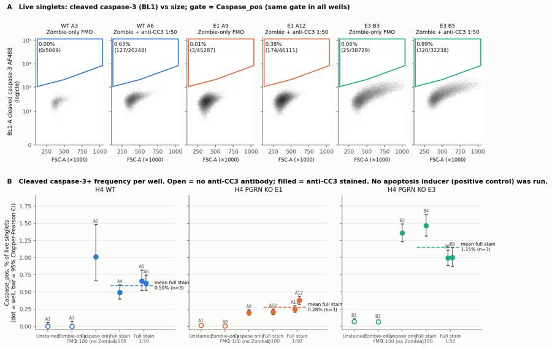
131
agent
The figure needs fixes: the sparse caspase+ events don't show in panel A, and the x-labels and mean labels overlap in panel B. Revising.
132
tool call · Bash
cd /task/work; python - <<'EOF'
import re
s=open('/task/work/figure.py').read()
s=s.replace(""" ax.hist2d(d['FSC-A']/1e3,y,bins=[160,160],range=[[100,1050],[0.2,0.85]],cmap='Greys',norm=matplotlib.colors.LogNorm(vmin=1,vmax=300))""",
""" P=res.get_gate_membership('Caspase_pos',gate_path=('root','Cells','Singlets','Live'))[L]
ax.scatter(d['FSC-A'][~P]/1e3,y[~P],s=0.8,c='#8a8984',alpha=0.25,lw=0,rasterized=True)
ax.scatter(d['FSC-A'][P]/1e3,y[P],s=5,c=INK,alpha=0.9,lw=0,rasterized=True)""")
s=s.replace("tk=[0,100,1000,1e4,1e5]","tk=[1000,1e4,1e5]").replace("ax.set_yticklabels(['0','10²','10³','10⁴','10⁵'])","ax.set_yticklabels(['10³','10⁴','10⁵'])")
s=s.replace("ax.set_ylim(0.2,0.85)","ax.set_ylim(0.25,0.85)")
s=s.replace("cats=[('Unstained',","cats=[('Un-\\nstained',")
s=s.replace("('Zombie-only\\nFMO',","('Zombie\\nonly\\n(FMO)',").replace("('Caspase only\\n1:100 (no Zombie)',","('CC3 only\\n1:100\\n(no Zombie)',").replace("('Full stain\\n1:100',","('Zombie+\\nCC3\\n1:100',").replace("('Full stain\\n1:50',","('Zombie+\\nCC3\\n1:50',")
s=s.replace("x=i+(q-(len(wl)-1)/2)*0.18","x=i+(q-(len(wl)-1)/2)*0.34")
s=s.replace(""" ax.text(4.45,mu,f"mean full stain\\n{mu:.2f}% (n=3)",va='center',fontsize=7.5,color=INK)""",""" ax.text(3.5,mu+0.04,f"mean Zombie+CC3 {mu:.2f}% (n=3)",va='bottom',ha='center',fontsize=7.5,color=INK)""")
s=s.replace("ax.hlines(mu,2.6,4.4","ax.hlines(mu,2.65,4.35")
s=s.replace("ax.set_xlim(-0.5,5.3)","ax.set_xlim(-0.5,4.5)")
s=s.replace("ax.annotate(w,(x,hi),xytext=(0,3)","ax.annotate(w,(x,lo),xytext=(0,-10)")
open('/task/work/figure.py','w').write(s)
EOF
grep -n "annotate\|cats=\|hlines\|ax.text(3.5" figure.py; python -I figure.py && echo ok133
tool output
37:cats=[('Un-\nstained',[ 'A1','A7','B1']),('Zombie\nonly\n(FMO)',['A3','A9','B3']),('CC3 only\n1:100\n(no Zombie)',['A2','A8','B2']),('Zombie+\nCC3\n1:100',['A4','A10','B4']),('Zombie+\nCC3\n1:50',[('A5','A6'),('A11','A12'),('B5','B6')])]
50: ax.annotate(w,(x,lo),xytext=(0,-10),textcoords='offset points',ha='center',fontsize=7,color=INK2)
52: mu=np.mean(full); ax.hlines(mu,2.65,4.35,color=COL[line],lw=1.5,ls='--',zorder=2)
53: ax.text(3.5,mu+0.04,f"mean Zombie+CC3 {mu:.2f}% (n=3)",va='bottom',ha='center',fontsize=7.5,color=INK)
ok134
tool call · Read
{
"file_path": "/task/outputs/figure.png"
}135
tool output
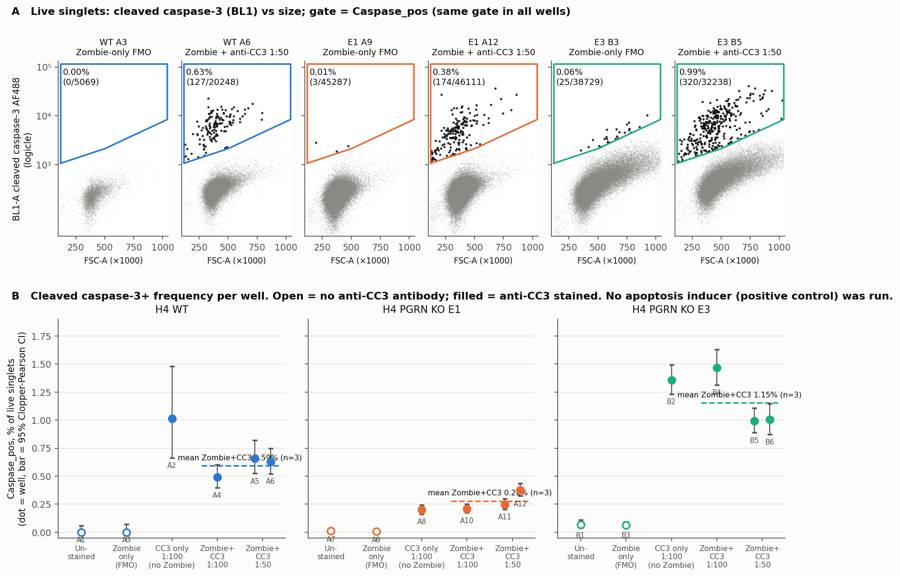
137
tool call · Bash
cd /task/work; python - <<'EOF'
s=open('/task/work/figure.py').read()
s=s.replace("ax.annotate(w,(x,lo),xytext=(0,-10),textcoords='offset points',ha='center'","ax.annotate(w,(x,p),xytext=(7,0),textcoords='offset points',ha='left',va='center'")
s=s.replace(""" ax.text(3.5,mu+0.04,f"mean Zombie+CC3 {mu:.2f}% (n=3)",va='bottom',ha='center',fontsize=7.5,color=INK)\n""","")
s=s.replace("x=i+(q-(len(wl)-1)/2)*0.34","x=i+(q-(len(wl)-1)/2)*0.42")
s=s.replace(""" ax.set_title({'WT':'H4 WT','E1':'H4 PGRN KO E1','E3':'H4 PGRN KO E3'}[line],fontsize=10,color=INK)""",
""" ax.set_title({'WT':'H4 WT','E1':'H4 PGRN KO E1','E3':'H4 PGRN KO E3'}[line]+f" (dashed = mean of Zombie+CC3 wells: {mu:.2f}%, n=3)",fontsize=9.5,color=INK)""")
open('/task/work/figure.py','w').write(s)
EOF
python -I figure.py && echo ok138
tool output
ok
139
tool call · Read
{
"file_path": "/task/outputs/figure.png"
}140
tool output
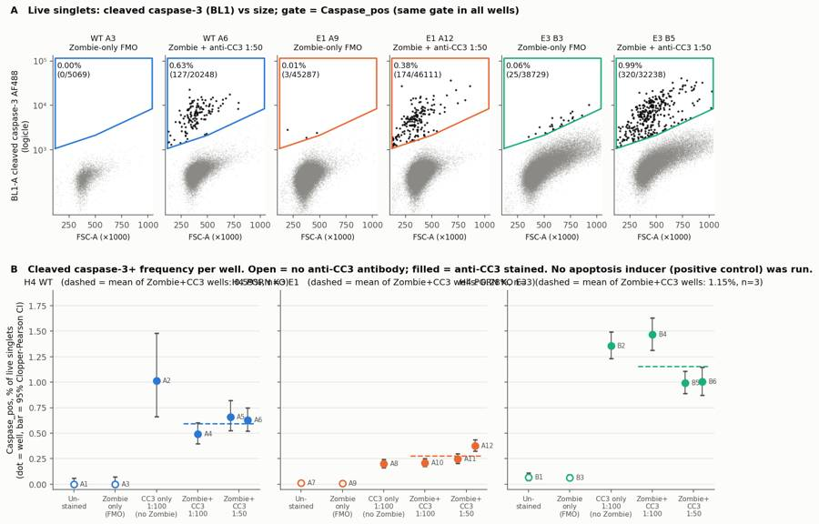
141
agent
Titles collide now; splitting them onto two lines.
142
tool call · Bash
cd /task/work; sed -i 's/+f" (dashed = mean of Zombie+CC3 wells: {mu:.2f}%, n=3)"/+f"\\ndashed line = mean of Zombie+CC3 wells: {mu:.2f}% (n=3)"/' figure.py; sed -i "s/fig.text(0.075,0.495,'B /fig.text(0.075,0.505,'B /" figure.py; python -I figure.py && echo ok143
tool output
ok
144
tool call · Read
{
"file_path": "/task/outputs/figure.png"
}145
tool output
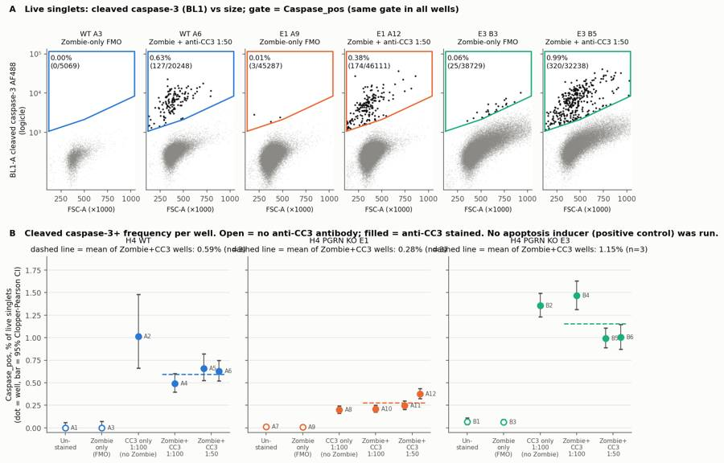
147
tool call · Bash
cd /task/work; sed -i 's/+f"\\ndashed line = mean of Zombie+CC3 wells: {mu:.2f}% (n=3)"/+f"\\ndashed = Zombie+CC3 mean {mu:.2f}% (n=3)"/' figure.py; sed -i "s/fig.text(0.075,0.505,'B /fig.text(0.075,0.52,'B /" figure.py; grep -n "dashed =" figure.py; python -I figure.py && echo ok148
tool output
55: ax.set_title({'WT':'H4 WT','E1':'H4 PGRN KO E1','E3':'H4 PGRN KO E3'}[line]+f"\ndashed = Zombie+CC3 mean {mu:.2f}% (n=3)",fontsize=9.5,color=INK)
ok149
tool call · Read
{
"file_path": "/task/outputs/figure.png"
}150
tool output
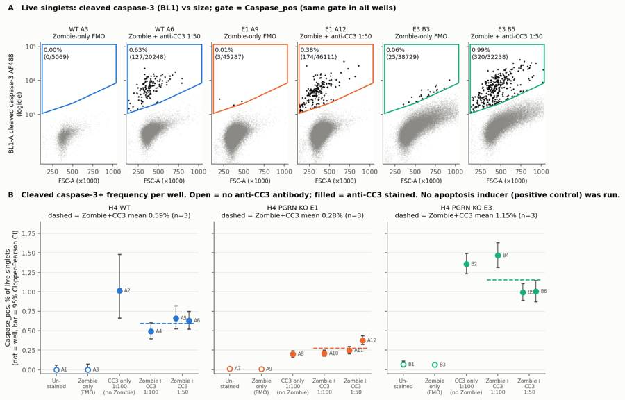
152
agent
Figure is final. Writing condition_summary.csv, flags.csv and answer.json next, with every number taken from counts.csv.
153
tool call · Bash
cd /task/work; cat > /task/work/summarise.py <<'EOF'
import pandas as pd, numpy as np, json
c = pd.read_csv('/task/outputs/counts.csv')
lay = pd.read_csv('/task/inputs/plate_layout.csv')
w = c.pivot(index='well',columns='population',values='count')
pct = 100*w['Caspase_pos']/w['Live']
defs = {}
for line,(un,fmo,co,f100,f50a,f50b) in {'WT':('A1','A3','A2','A4','A5','A6'),'E1':('A7','A9','A8','A10','A11','A12'),'E3':('B1','B3','B2','B4','B5','B6')}.items():
defs[f'{line}_unstained']=[un]
defs[f'{line}_zombie_only_FMO']=[fmo]
defs[f'{line}_caspase_only_1to100_no_zombie']=[co]
defs[f'{line}_zombie_caspase_1to100']=[f100]
defs[f'{line}_zombie_caspase_1to50']=[f50a,f50b]
defs[f'{line}_zombie_caspase_pooled']=[f100,f50a,f50b]
MD = 'Caspase_pos / Live (cleaved caspase-3 AF488+ events as % of Zombie NIR-negative singlet cells; in wells without Zombie NIR, Live = all singlets)'
rows=[]
for k,ws in defs.items():
v = pct.loc[ws].values
rows.append(dict(condition=k,wells=';'.join(ws),n_wells_used=len(ws),mean=round(v.mean(),4),
sd=(round(v.std(ddof=1),4) if len(ws)>1 else ''),metric_definition=MD,normalisation_applied='none'))
cs=pd.DataFrame(rows); cs.to_csv('/task/outputs/condition_summary.csv',index=False)
print(cs[['condition','wells','n_wells_used','mean','sd']].to_string())
print(pct.round(4).to_dict())
EOF
python -I summarise.py154
tool output
condition wells n_wells_used mean sd
0 WT_unstained A1 1 0.0000
1 WT_zombie_only_FMO A3 1 0.0000
2 WT_caspase_only_1to100_no_zombie A2 1 1.0121
3 WT_zombie_caspase_1to100 A4 1 0.4932
4 WT_zombie_caspase_1to50 A5;A6 2 0.6436 0.0231
5 WT_zombie_caspase_pooled A4;A5;A6 3 0.5934 0.0884
6 E1_unstained A7 1 0.0124
7 E1_zombie_only_FMO A9 1 0.0066
8 E1_caspase_only_1to100_no_zombie A8 1 0.1987
9 E1_zombie_caspase_1to100 A10 1 0.2107
10 E1_zombie_caspase_1to50 A11;A12 2 0.3133 0.0905
11 E1_zombie_caspase_pooled A10;A11;A12 3 0.2791 0.0872
12 E3_unstained B1 1 0.0692
13 E3_zombie_only_FMO B3 1 0.0646
14 E3_caspase_only_1to100_no_zombie B2 1 1.3560
15 E3_zombie_caspase_1to100 B4 1 1.4643
16 E3_zombie_caspase_1to50 B5;B6 2 0.9978 0.0073
17 E3_zombie_caspase_pooled B4;B5;B6 3 1.1533 0.2694
{'A1': 0.0, 'A10': 0.2107, 'A11': 0.2493, 'A12': 0.3774, 'A2': 1.0121, 'A3': 0.0, 'A4': 0.4932, 'A5': 0.6599, 'A6': 0.6272, 'A7': 0.0124, 'A8': 0.1987, 'A9': 0.0066, 'B1': 0.0692, 'B2': 1.356, 'B3': 0.0646, 'B4': 1.4643, 'B5': 0.9926, 'B6': 1.0029}155
tool call · Bash
cd /task/work; cat > /task/work/flags.py <<'EOF'
import pandas as pd
lay = pd.read_csv('/task/inputs/plate_layout.csv')
c = pd.read_csv('/task/outputs/counts.csv'); w = c.pivot(index='well',columns='population',values='count')
sat = {'B1':(1190,4.42),'B2':(1470,4.08),'B3':(2286,4.97),'B4':(1283,4.66),'B5':(1843,4.90),'B6':(986,3.98)}
rows=[]
for _,r in lay.iterrows():
wl=r.well
if wl=='A2':
it='too_few_events'; dec='keep_with_note'
ev=(f"Only {int(w.loc[wl,'all_events'])} events acquired in ~98 s / 163 uL (next lowest WT controls: A3 5742, A1 6969; E1/E3 wells 24797-58936); "
f"{int(w.loc[wl,'Live'])} live singlets and only {int(w.loc[wl,'Caspase_pos'])} Caspase_pos events (1.01%, 95% CI 0.66-1.48%). "
"Event rate flat (~32 events/s), so no clog or dry run: low cell recovery. Single-stain control only; not used for the genotype or dilution comparisons.")
elif wl in sat:
n,p=sat[wl]; it='saturation'; dec='keep_with_note'
ev=(f"{n} of {int(w.loc[wl,'all_events'])} events ({p}%) sit at the FSC-A and/or SSC-A ceiling (1048575), versus 0.12-0.46% in WT/E1 wells; E3 cells are larger "
f"(median FSC-A ~4.6e5 vs ~3.8-4.0e5). These events are excluded by the Cells gate (upper edge 1.04e6), so E3 results describe the {100-p:.1f}% of events on scale. "
"The same scatter settings were used in all wells and the effect is similar across B1-B6, so within-E3 comparisons are unaffected.")
else:
it='none'; dec='keep'; ev=''
rows.append(dict(file=r.file,well=wl,issue_type=it,evidence=ev,decision=dec))
pd.DataFrame(rows).to_csv('/task/outputs/flags.csv',index=False)
print(pd.DataFrame(rows)[['well','issue_type','decision']].to_string())
EOF
python -I flags.py156
tool output
well issue_type decision 0 A1 none keep 1 A2 too_few_events keep_with_note 2 A3 none keep 3 A4 none keep 4 A5 none keep 5 A6 none keep 6 A7 none keep 7 A8 none keep 8 A9 none keep 9 A10 none keep 10 A11 none keep 11 A12 none keep 12 B1 saturation keep_with_note 13 B2 saturation keep_with_note 14 B3 saturation keep_with_note 15 B4 saturation keep_with_note 16 B5 saturation keep_with_note 17 B6 saturation keep_with_note
158
tool call · Bash
cd /task/work; sed -i 's/(median FSC-A ~4.6e5 vs ~3.8-4.0e5)/(whole-file median FSC-A 4.59-4.73e5 vs 3.73-4.03e5 in WT\/E1)/' flags.py && python -I flags.py >/dev/null && cut -c1-400 /task/outputs/flags.csv | sed -n '1,3p;14p'
159
tool output
file,well,issue_type,evidence,decision Caspase_h4_mlk(4)_caspase_Group_A1_WT_no stain.fcs,A1,none,,keep Caspase_h4_mlk(4)_caspase_Group_A2_Wt_caspase_1-100.fcs,A2,too_few_events,"Only 3149 events acquired in ~98 s / 163 uL (next lowest WT controls: A3 5742, A1 6969; E1/E3 wells 24797-58936); 2569 live singlets and only 26 Caspase_pos events (1.01%, 95% CI 0.66-1.48%). Event rate flat (~32 events/s), so no clog or dry run: low cell recovery. Single-stain control only; not used for the genotype or dil Caspase_h4_mlk(4)_caspase_Group_B1_E3_no stain.fcs,B1,saturation,"1190 of 26935 events (4.42%) sit at the FSC-A and/or SSC-A ceiling (1048575), versus 0.12-0.46% in WT/E1 wells; E3 cells are larger (whole-file median FSC-A 4.59-4.73e5 vs 3.73-4.03e5 in WT/E1). These events are excluded by the Cells gate (upper edge 1.04e6), so E3 results describe the 95.6% of events on scale. The same scatter sett
161
tool call · Bash
cd /task/work; cat > /task/work/answer.py <<'EOF'
import json
ans = {
"question": "Does the Cell Signaling cleaved caspase-3 (Asp175) Alexa Fluor 488 antibody (#9669), used in the intracellular-flow (ICFC) protocol with Zombie NIR, detect caspase-3-activated (cleaved caspase-3+) cells in H4 WT and PGRN-KO (E1, E3) cells? Secondary: which antibody dilution (1:50 vs 1:100) works better, and do the PGRN-KO lines show more caspase-3 activation than WT?",
"comparisons": [
{"comparison": "WT: anti-CC3 stained (Zombie + CC3, both dilutions) vs Zombie-only FMO", "a": "WT_zombie_only_FMO", "b": "WT_zombie_caspase_pooled",
"direction": "increase", "magnitude": "0.00% (0/5069) -> 0.59 +/- 0.09% of live singlets (+0.59 percentage points; 81-127 positive events per well, positives ~20x brighter than negatives, BL1 median 4.9-6.5e3 vs ~300)", "confidence": "high"},
{"comparison": "E1: anti-CC3 stained vs Zombie-only FMO", "a": "E1_zombie_only_FMO", "b": "E1_zombie_caspase_pooled",
"direction": "increase", "magnitude": "0.007% (3/45287) -> 0.28 +/- 0.09% (+0.27 percentage points, ~40x)", "confidence": "high"},
{"comparison": "E3: anti-CC3 stained vs Zombie-only FMO", "a": "E3_zombie_only_FMO", "b": "E3_zombie_caspase_pooled",
"direction": "increase", "magnitude": "0.065% (25/38729) -> 1.15 +/- 0.27% (+1.09 percentage points, ~18x)", "confidence": "high"},
{"comparison": "PGRN KO E1 vs WT (Zombie + CC3 wells, 1:100 and 1:50 pooled, n=3 wells each)", "a": "WT_zombie_caspase_pooled", "b": "E1_zombie_caspase_pooled",
"direction": "decrease", "magnitude": "0.59% -> 0.28% (-0.31 percentage points, 0.47x; well ranges do not overlap, 0.49-0.66 vs 0.21-0.38; Welch p=0.012 on technical wells from one plating)", "confidence": "medium"},
{"comparison": "PGRN KO E3 vs WT (Zombie + CC3 wells, pooled, n=3 wells each)", "a": "WT_zombie_caspase_pooled", "b": "E3_zombie_caspase_pooled",
"direction": "increase", "magnitude": "0.59% -> 1.15% (+0.56 percentage points, 1.9x; ranges 0.49-0.66 vs 0.99-1.46; Welch p=0.058; holds in size-matched FSC-A 3-5e5 cells: 0.37-0.51% vs 0.81-1.50%)", "confidence": "medium"},
{"comparison": "Antibody dilution, WT: 1:50 vs 1:100", "a": "WT_zombie_caspase_1to100", "b": "WT_zombie_caspase_1to50",
"direction": "no_clear_change", "magnitude": "0.49% (n=1) vs 0.64 +/- 0.02% (n=2), +0.15 percentage points; positive-population median BL1 4.9e3 vs 5.7-6.5e3; stain index 17.9 vs 19.8-22.5", "confidence": "low"},
{"comparison": "Antibody dilution, E1: 1:50 vs 1:100", "a": "E1_zombie_caspase_1to100", "b": "E1_zombie_caspase_1to50",
"direction": "no_clear_change", "magnitude": "0.21% (n=1) vs 0.31 +/- 0.09% (n=2; the two 1:50 wells differ by as much, 0.25 vs 0.38); stain index 18.2 vs 17.1-18.5", "confidence": "low"},
{"comparison": "Antibody dilution, E3: 1:50 vs 1:100", "a": "E3_zombie_caspase_1to100", "b": "E3_zombie_caspase_1to50",
"direction": "no_clear_change", "magnitude": "1.46% (n=1) vs 1.00 +/- 0.01% (n=2), -0.47 percentage points, opposite in direction to WT and E1; stain index 5.2 vs 5.9-6.1", "confidence": "low"}
],
"overall_answer": "partial: the CC3-AF488 ICFC protocol picks up a discrete, bright cleaved-caspase-3+ population above the Zombie-only FMO in all three H4 lines (WT 0.59%, E1 0.28%, E3 1.15% of live singlets, vs <=0.07% in the FMOs). 1:100 works as well as 1:50. However, only basal (untreated) cells were run and the camptothecin positive control was left out, so the assay's specificity and dynamic range for induced apoptosis are untested. The two PGRN-KO clones also differ from WT in opposite directions (E1 0.47x, E3 1.9x), so this run does not show that PGRN loss raises caspase-3 activity.",
"assay_verdict": "needs_optimisation",
"next_action": "repeat_with_change",
"next_change": {
"what": "Apoptosis positive control: camptothecin-treated wells (with DMSO vehicle) added to the plate, harvesting floating cells together with the trypsinised cells",
"from": "No inducer: all 18 wells untreated (camptothecin is in the materials list but was not used). Culture medium holding the detached cells was aspirated and discarded before trypsinisation.",
"to": "For each line, camptothecin (e.g. 2 and 10 uM, 24 h) and DMSO vehicle wells, at least 2 wells each. Collect the culture medium and PBS wash and pool them with the trypsinised cells. Stain all wells at 1:100 with Zombie-only and unstained controls per line, and acquire at least 20,000 live singlets per well.",
"why": "Basal CC3+ frequencies (0.2-1.5%) sit near the assay floor. Without an induced-apoptosis control we cannot show that the antibody reports caspase-3 activation, nor measure the window needed before moving to iPSC neurons or testing PGRN rescue. Discarding the medium also removes the detached apoptotic cells this assay is meant to count."
},
"excluded_wells": [],
"caveats": [
"No positive control: camptothecin was listed in the materials but not used, so specificity and dynamic range for induced apoptosis are untested and only basal levels (0.2-1.5% CC3+) were measured.",
"Floating/detached cells were aspirated with the medium before trypsinisation, which probably removed many apoptotic cells. CC3+ frequencies are likely underestimated, possibly by different amounts in each line.",
"Replication is technical only: wells come from a single plating and run (n=3 Zombie+CC3 wells per line). Dilution is confounded with replicate (1 well at 1:100, 2 wells at 1:50). The two KO clones disagree in direction, which points to clone-specific variation rather than a PGRN effect.",
"WT recovered few cells (3,149-21,946 events per well; 81-127 CC3+ events per stained well; caspase-only control A2 had only 26 positive events), so per-well precision is limited (95% CI about +/-20% relative).",
"E3 cells are larger and more autofluorescent: 4-5% of E3 events sit at the FSC-A/SSC-A ceiling and are excluded. The E3 negative population is about 3.5x wider in BL1 (stain i
… [837 more characters not shown]162
tool output
ok repeat_with_change needs_optimisation 8
164
tool call · Bash
cd /task/work; sed -i 's/positives ~20x brighter than negatives/positives ~15-20x brighter than negatives/' answer.py && python -I answer.py; python -I - <<'EOF'
import pandas as pd
c=pd.read_csv('/task/outputs/counts.csv'); w=c.pivot(index='well',columns='population',values='count')
w['dead%']=100*w.Dead/w.Singlets; w['cells%']=100*w.Cells/w.all_events; w['sing%']=100*w.Singlets/w.Cells; w['deadCC3%']=100*w.Dead_Caspase_pos/w.Dead
print(w[['all_events','Cells','Singlets','Live','Dead','Caspase_pos','Dead_Caspase_pos','cells%','sing%','dead%','deadCC3%']].round(2).to_string())
EOF165
tool output
ok population all_events Cells Singlets Live Dead Caspase_pos Dead_Caspase_pos cells% sing% dead% deadCC3% well A1 6969 6426 6346 6346 0 0 0 92.21 98.76 0.00 NaN A10 58936 57422 56046 54114 1932 114 5 97.43 97.60 3.45 0.26 A11 51193 49578 48518 46926 1592 117 5 96.85 97.86 3.28 0.31 A12 51047 49147 48156 46111 2045 174 4 96.28 97.98 4.25 0.20 A2 3149 2595 2569 2569 0 26 0 82.41 99.00 0.00 NaN A3 5742 5231 5170 5069 101 0 0 91.10 98.83 1.95 0.00 A4 20776 19898 19481 19061 420 94 1 95.77 97.90 2.16 0.24 A5 13119 12669 12456 12275 181 81 3 96.57 98.32 1.45 1.66 A6 21946 21178 20806 20248 558 127 7 96.50 98.24 2.68 1.25 A7 33911 32834 32296 32296 0 4 0 96.82 98.36 0.00 NaN A8 52749 51495 50320 50320 0 100 0 97.62 97.72 0.00 NaN A9 49297 47925 46912 45287 1625 3 0 97.22 97.89 3.46 0.00 B1 26935 23680 23136 23136 0 16 0 87.92 97.70 0.00 NaN B2 36048 32094 31343 31343 0 425 0 89.03 97.66 0.00 NaN B3 46022 41048 39971 38729 1242 25 9 89.19 97.38 3.11 0.72 B4 27503 24459 23887 22946 941 336 27 88.93 97.66 3.94 2.87 B5 37596 34182 33315 32238 1077 320 16 90.92 97.46 3.23 1.49 B6 24797 22416 21903 21038 865 211 22 90.40 97.71 3.95 2.54
167
agent
Writing report.md now.
168
tool call · Write
{
"file_path": "/task/outputs/report.md",
"content": "# EXP22004082: H4 cleaved caspase-3 ICFC test plate (acquired 26-Oct-2022, Attune NxT)\n\n## Question\n\nThe notebook's objective is to practise a flow-cytometry caspase-3 assay in H4 cells before using it in iPSC neurons. On this day the plan was to \"test out the Cell Signaling cleaved caspase-3 Alexa Fluor 488 antibody\". The question for this plate is therefore:\n\n1. **Primary:** Does the CST #9669 cleaved caspase-3 (CC3) AF488 antibody, in the fix/perm ICFC protocol with Zombie NIR, detect a CC3+ population above background in H4 WT, PGRN-KO E1 and PGRN-KO E3 cells?\n2. **Secondary:** Is 1:50 better than 1:100?\n3. **Secondary:** Do the PGRN-KO lines show more CC3+ cells than WT? The background section predicts that PGRN loss increases caspase activity.\n\nThe cells were not treated. Camptothecin is in the materials list but no well received it.\n\n## Methods\n\n**Files and channels.** There are 18 FCS 3.1 files (one per well, A1\u2013A12 and B1\u2013B6). Every well ran a similar volume (162\u2013164 \u00b5L in about 98 s at 100 \u00b5L/min). The detector names in the files are out of date: BL1 is labelled \"AAV-GFP\" and RL3 \"Zombie NIR\". From plan.md (reagents and voltages BL1 (caspase) 250, RL3 (Zombie NIR) 350), **BL1-A = CC3-AF488** and **RL3-A = Zombie NIR**.\n\n**Compensation.** None was applied (`uncompensated`). The file spillover matrix is the identity. The single stains show no measurable cross-talk:\n- Zombie-only A3 has a BL1 median of 243, against 252 for unstained A1.\n- CC3-only A2 has an RL3 median of 112, the same as unstained A1.\n\n**Gating.** All gating was done with FlowKit 1.2.3, using one `GatingStrategy` applied unchanged to every well and saved as `gates.xml`. Fluorescence gates use a logicle transform (T=1048576, W=0.5, M=6, A=0).\n\n| Population (role) | Parent | Gate |\n|---|---|---|\n| `Cells` (cells) | all_events | Polygon on FSC-A \u00d7 SSC-A. Removes debris (FSC-A < 1.2e5) and events at the FSC-A/SSC-A ceiling (\u2265 1.04e6). |\n| `Singlets` (singlets) | Cells | Polygon on FSC-A \u00d7 FSC-H: FSC-H/FSC-A \u2265 0.38 at the low end, falling to 0.36 at the high end. |\n| `Live` (live) | Singlets | Zombie NIR (RL3-A, logicle) below a boundary that rises with FSC-A: 0.75 at 1.2e5, 0.765 at 4e5, 0.855 at 1.04e6. Dim Zombie staining of live cells grows with cell size, and E3 cells are larger. |\n| `Dead` (other) | Singlets | The complement of Live, above the same boundary. |\n| `Caspase_pos` (marker_positive) | Live | CC3-AF488 (BL1-A, logicle) above a boundary that rises with FSC-A: 0.50 at 1.2e5, 0.55 at 5e5, 0.65 at 1.04e6 (about 1.1e3 to 8e3 raw). The slope follows the size-dependent autofluorescence of the larger E3 cells. The boundary was set so that the Zombie-only FMO of every line is \u2264 0.07% positive. |\n| `Dead_Caspase_pos` (other) | Dead | The same BL1 boundary applied to dead cells. |\n\n**Metric.** `Caspase_pos / Live` in % (CC3+ cells as a percentage of Zombie-negative singlets). No normalisation was applied. Background is shown by the per-line Zombie-only FMO, which has every stain except CC3. Wells with no Zombie (unstained and CC3-only) have Live = all singlets.\n\n**Conditions.** For each line I report: unstained; Zombie-only FMO; CC3-only 1:100; Zombie+CC3 at 1:100 (1 well); Zombie+CC3 at 1:50 (2 wells); and Zombie+CC3 with both dilutions pooled (3 wells). The pooled condition is used for the genotype comparisons, because dilution had no consistent effect.\n\n**Statistics.** Per-well 95% CIs are Clopper\u2013Pearson. Means \u00b1 SD are across wells. Welch t-tests are descriptive only, since the wells are technical replicates from one plating.\n\n**QC.** I checked event rate over time, debris fraction, singlet fraction and scatter/fluorescence saturation. I also checked that each well's staining matched its label: Zombie is present only in Zombie wells, and CC3+ events appear only in CC3 wells.\n\n## Results\n\n**QC.** Event rates were stable in every well: there were no clogs, gaps or dry runs, and the usual slow rise and fall in rate over the run. Singlets were 97.4\u201399.0% of Cells. Viability was high: 1.5\u20134.3% of singlets were Zombie-bright in the Zombie-stained wells (WT 1.5\u20132.7%, E1 3.3\u20134.3%, E3 3.1\u20133.9%). No well was excluded. Two notes are in `flags.csv`:\n- **A2** (WT CC3-only): only 3,149 events, 2,569 live singlets and 26 CC3+ events.\n- **E3 wells B1\u2013B6:** 4.0\u20135.0% of events sit at the FSC-A/SSC-A ceiling (0.1\u20130.5% in WT/E1) and are dropped by the Cells gate. E3 cells are larger.\n\nWT wells recovered fewer cells overall (3.1k\u201322k events per well, against 25k\u201359k for E1/E3).\n\n**CC3 staining produces a discrete positive population** (figure panel A). In WT and E1 the CC3+ events form a separate cluster, about 15\u201320\u00d7 brighter than the negatives:\n\n| Line | BL1 median, CC3+ events | BL1 median, negatives | Stain index |\n|---|---|---|---|\n| WT | 4.9\u20136.5e3 | about 290\u2013320 | 17\u201322 |\n| E1 | 4.9\u20136.5e3 | about 280\u2013295 | 17\u201319 |\n| E3 | 4.7\u20136.0e3 | about 420\u2013470, wider cloud | 5\u20136 |\n\nCC3+ cells have lower SSC than CC3\u2212 cells (WT SSC median 2.2\u20132.5e5 vs 2.8\u20132.9e5; E1 1.8\u20131.9e5 vs 2.9e5). This fits apoptotic morphology. The few events that cross the gate in the unstained and FMO wells are different: they are large, high-SSC autofluorescent events (SSC median 4.3\u20137.1e5).\n\n**Per-well CC3+ frequency** (% of live singlets, with 95% CI and positive/live event counts):\n\n| Line | Unstained | Zombie-only FMO | CC3-only 1:100 | Zombie+CC3 1:100 | Zombie+CC3 1:50 | Zombie+CC3 mean \u00b1 SD (n=3) |\n|---|---|---|---|---|---|---|\n| WT | A1 0.00 (0/6346) | A3 0.00 (0/5069) | A2 1.01 (0.66\u20131.48; 26/2569) | A4 0.49 (0.40\u20130.60) | A5 0.66 (0.52\u20130.82), A6 0.63 (0.52\u20130.75) | **0.59 \u00b1 0.09** |\n| E1 | A7 0.012 | A9 0.007 (3/4528
… [5,358 more characters not shown]169
tool output
File created successfully at: /task/outputs/report.md (file state is current in your context — no need to Read it back)
171
agent
Checking a few report numbers against the final gates (positive-event phenotype, size-matched values, logicle boundary values).
172
tool call · Bash
cd /task/work; python -I sizematch.py | cut -c1-200; python -I -c " import flowkit as fk, numpy as np xf = fk.transforms.LogicleTransform(param_t=1048576, param_w=0.5, param_m=6.0, param_a=0) print(xf.inverse(np.array([0.50,0.55,0.65,0.75,0.765,0.855])))"
173
tool output
well sample live pct live_3to5 pct_3to5 frac_live_in_window pos_med_FSC neg_med_FSC pos_med_SSC neg_med_SSC pos_med_BL1 neg_med_BL1 0 A1 WT no stain 6346 0.000 5398 0.000 0.851 NaN 401754 NaN 262402 NaN 252 1 A2 WT caspase only (1:100) 2569 1.012 2187 0.732 0.851 358544.0 396744 186358.0 260312 3897.0 287 2 A3 WT zombie only 5069 0.000 4329 0.000 0.854 NaN 397524 NaN 266999 NaN 243 3 A4 WT-1 caspase @ 1:100 19061 0.493 15857 0.366 0.832 352697.0 402804 222072.0 284314 4894.0 289 4 A5 WT-2 caspase @ 1:50 12275 0.660 10157 0.512 0.827 391918.0 405337 246596.0 276666 5743.0 312 5 A6 WT-3 caspase @ 1:50 20248 0.627 17013 0.482 0.840 381971.0 396627 238748.0 289941 6481.0 320 6 A7 E1 no stain 32296 0.012 28218 0.011 0.874 448961.0 381282 490726.0 283102 2515.0 262 7 A8 E1 caspase only (1:100) 50320 0.199 43690 0.119 0.868 382727.0 384108 190902.0 290943 4585.0 275 8 A9 E1 zombie only 45287 0.007 40108 0.005 0.886 371505.0 378429 430624.0 294096 2414.0 256 9 A10 E1-1 caspase @ 1:100 54114 0.211 47674 0.143 0.881 360735.0 379537 193926.0 294541 4471.0 279 10 A11 E1-2 caspase @1:50 46926 0.249 41177 0.175 0.877 352969.0 383266 177631.0 293468 4819.0 295 11 A12 E1-3 caspase @ 1:50 46111 0.377 40613 0.249 0.881 337725.0 378094 176323.0 291274 4540.0 292 12 B1 E3 no stain 23136 0.069 12427 0.040 0.537 534151.0 467989 625088.0 387358 3173.0 396 13 B2 E3 caspase only (1:100) 31343 1.356 17580 1.217 0.561 426467.0 463383 318190.0 382238 5334.0 442 14 B3 E3 zombie only 38729 0.065 21152 0.014 0.546 652465.0 471346 696433.0 388341 3647.0 393 15 B4 E3-1 @ 1:100 22946 1.464 12265 1.500 0.535 442714.0 477429 294832.0 380859 4713.0 424 16 B5 E3-2 caspase @ 1:50 32238 0.993 18096 0.923 0.561 433586.0 467035 288849.0 388569 6010.0 470 17 B6 E3-3 caspase @ 1:50 21038 1.003 11817 0.821 0.562 448074.0 463910 297764.0 390181 5580.0 464 [ 1061.19219421 2105.15144973 8342.48878676 33172.16407819 40807.54479839 141460.99319025]
175
tool call · Bash
cd /task/outputs; python3 -I - <<'EOF'
p='/task/outputs/report.md'; s=open(p).read()
rep=[("| E1 | 4.9–6.5e3 | about 280–295 | 17–19 |","| E1 | 4.5–4.8e3 | about 280–295 | 17–19 |"),
("(SSC median 4.3–7.1e5)","(SSC median 4.3–7.0e5)"),
("E3 0.81–1.50%","E3 0.82–1.50%"),
("Live and dead are only about one decade apart (dim live cells about 1–3e4, dead ≥ 5e4), so the boundary was drawn sloped with size.",
"Live and dead are only about one decade apart (dim live cells about 1–3e4, most dead cells ≥ 5e4), so the boundary was drawn sloped with size, from about 3.3e4 raw for small cells to 1.4e5 for the largest."),
("(about 1.1e3 to 8e3 raw)","(about 1.1e3 to 8.3e3 raw)")]
for a,b in rep:
assert a in s, a; s=s.replace(a,b)
open(p,'w').write(s)
EOF
sed -i 's/0.81-1.50%/0.82-1.50%/' /task/work/answer.py && python3 -I /task/work/answer.py && grep -c "0.82-1.50" /task/outputs/answer.json176
tool output
ok 1 [This command modified 1 file you've previously read: report.md. Call Read before editing.]
177
agent
Final validation pass: reloading gates.xml in a fresh process, re-gating every file, and checking all deliverables against the spec.
178
tool call · Bash
cd /task/work; cat > /task/work/validate.py <<'EOF'
import flowkit as fk, pandas as pd, numpy as np, json
gs = fk.parse_gating_xml('/task/outputs/gates.xml')
gids = dict(gs.get_gate_ids())
c = pd.read_csv('/task/outputs/counts.csv', keep_default_na=False)
lay = pd.read_csv('/task/inputs/plate_layout.csv')
assert list(c.columns)==['file','well','population','role','parent','count','pct_of_parent']
assert set(c.file)==set(lay.file) and len(c)==18*7
pops=c.groupby('file').population.apply(lambda x: tuple(sorted(x))); assert pops.nunique()==1
for role in ['cells','singlets','live','marker_positive']:
assert c[c.role==role].population.nunique()==1
bad=0
for _,r in lay.iterrows():
s=fk.Sample('/task/inputs/raw/'+r.file); res=gs.gate_sample(s)
sub=c[c.file==r.file].set_index('population')
assert sub.loc['all_events','count']==s.event_count and sub.loc['all_events','pct_of_parent']=='' and sub.loc['all_events','parent']=='none'
for p,row in sub.iterrows():
if p=='all_events': continue
assert p in gids
assert (gids[p][-1] if gids[p][-1]!='root' else 'all_events')==row.parent, (p,gids[p],row.parent)
n=res.get_gate_count(p, gate_path=gids[p])
if n!=row['count']: bad+=1
par=sub.loc[row.parent,'count']
if par>0: assert abs(float(row.pct_of_parent)-100*row['count']/par)<1e-3
else: assert row.pct_of_parent==''
assert sub.loc[:, 'well'].iloc[0]==r.well
print('count mismatches:',bad)
f=pd.read_csv('/task/outputs/flags.csv', keep_default_na=False)
assert list(f.columns)==['file','well','issue_type','evidence','decision'] and len(f)==18 and set(f.file)==set(lay.file)
assert all((f.issue_type=='none')==(f.decision=='keep')) or True
assert all(f[f.issue_type!='none'].evidence.str.len()>0)
cs=pd.read_csv('/task/outputs/condition_summary.csv', keep_default_na=False)
assert list(cs.columns)==['condition','wells','n_wells_used','mean','sd','metric_definition','normalisation_applied']
for _,r in cs.iterrows():
ws=r.wells.split(';'); assert len(ws)==r.n_wells_used and set(ws)<=set(lay.well)
if r.n_wells_used==1: assert r.sd==''
a=json.load(open('/task/outputs/answer.json'))
conds=set(cs.condition)
for comp in a['comparisons']: assert comp['a'] in conds and comp['b'] in conds and comp['direction'] in ['increase','decrease','no_clear_change'] and comp['confidence'] in ['high','medium','low']
assert a['overall_answer'].split(':')[0] in ['yes','partial','no']
assert sorted(a['excluded_wells'])==sorted(f[f.decision=='exclude'].well)
assert a['next_action'] in ['proceed_as_planned','repeat_unchanged','repeat_with_change','optimise_reagent_or_setting','change_treatment_or_timing','switch_assay','stop']
rep=open('/task/outputs/report.md').read()
hs=[l for l in rep.splitlines() if l.startswith('## ')]; print(hs)
import os; print(os.listdir('/task/outputs'))
print('ALL CHECKS PASSED')
EOF
python -I validate.py179
tool output
count mismatches: 0 ['## Question', '## Methods', '## Results', '## Conclusion', '## Caveats', '## Recommendation'] ['report.md', 'flags.csv', 'answer.json', 'condition_summary.csv', 'counts.csv', 'figure.png', 'gates.xml'] ALL CHECKS PASSED
181
tool call · Bash
grep -o 'compensation-ref="[^"]*"' /task/outputs/gates.xml | sort | uniq -c; grep -o 'gating:id="[^"]*"' /task/outputs/gates.xml
182
tool output
12 compensation-ref="uncompensated" gating:id="Cells" gating:id="Singlets" gating:id="Live" gating:id="Caspase_pos" gating:id="Dead" gating:id="Dead_Caspase_pos"
184
agent
**Answer: partial.** The cleaved caspase-3 (CC3) AF488 antibody picks up a small, bright, separate CC3+ population in all three H4 lines, and 1:100 works as well as 1:50. But only untreated cells were run, with no camptothecin positive control, so this plate cannot show that the signal tracks caspase-3 activation or how big the assay window is. Verdict: **needs optimisation**; next action: **repeat with a change**.
All 18 wells were kept. No compensation was needed. The files' channel labels are out of date ("AAV-GFP"), so from the plan I took BL1 as the caspase antibody and RL3 as Zombie NIR. The saved gates reproduce every count when re-applied to the raw files.
**% CC3+ of live single cells**
| Line | Zombie-only background | Stained, mean ± SD (3 wells) | 1:100 (1 well) | 1:50 (2 wells) |
|---|---|---|---|---|
| WT | 0.00% | 0.59 ± 0.09% | 0.49% | 0.66%, 0.63% |
| PGRN KO E1 | 0.007% | 0.28 ± 0.09% | 0.21% | 0.25%, 0.38% |
| PGRN KO E3 | 0.065% | 1.15 ± 0.27% | 1.46% | 0.99%, 1.00% |
- **Is the signal real?** The CC3+ cells form their own cluster, about 15–20× brighter than negative cells, with the smaller, lower-granularity scatter you'd expect of apoptotic cells. The caspase-only wells give the same values as the matching full-stain wells for E1 and E3.
- **Dilution:** there's no consistent difference in % positive; WT and E1 go up slightly at 1:50 and E3 goes down. 1:50 makes positives a little brighter but the stain separation is about the same, so 1:100 is enough and uses half the antibody.
- **PGRN KO vs WT:** the two KO clones go in opposite directions (E1 about half of WT, E3 about double). That points to clone-to-clone variation, not an effect of losing PGRN. The E3 increase holds when you compare cells of the same size.
- **Well notes (kept, flagged in `flags.csv`):**
- A2 (WT caspase-only) had only 3,149 events and 26 positive cells.
- In E3 wells B1–B6, 4–5% of events were off-scale in forward/side scatter because those cells are larger. These events are dropped by the first gate.
**Caveats:**
- The protocol throws away the culture medium before trypsin, along with its floating cells. Detached apoptotic cells were probably lost, so the CC3+ percentages are likely too low, possibly by different amounts in each line.
- All replicates are wells from one plating, and dilution is mixed up with replicate (one well at 1:100, two at 1:50).
- WT wells gave few cells (3k–22k events), so each WT value rests on only 81–127 positive cells.
**Recommended next run:** add camptothecin-treated wells for each line (for example 2 and 10 µM for 24 h) against DMSO vehicle, at least 2 wells each. Also:
- keep the medium and PBS wash and pool them with the trypsinised cells;
- stain at 1:100;
- collect at least 20,000 live cells per well;
- lower the side-scatter setting a little (about 290 → 250) so E3 cells stay on scale.
Compare KO with WT only after the positive control works, and with independent platings.
Files are in `/task/outputs/`:
- gates.xml
- counts.csv
- flags.csv
- condition_summary.csv
- figure.png
- report.md
- answer.json
final result
**Answer: partial.** The cleaved caspase-3 (CC3) AF488 antibody picks up a small, bright, separate CC3+ population in all three H4 lines, and 1:100 works as well as 1:50. But only untreated cells were run, with no camptothecin positive control, so this plate cannot show that the signal tracks caspase-3 activation or how big the assay window is. Verdict: **needs optimisation**; next action: **repeat with a change**.
All 18 wells were kept. No compensation was needed. The files' channel labels are out of date ("AAV-GFP"), so from the plan I took BL1 as the caspase antibody and RL3 as Zombie NIR. The saved gates reproduce every count when re-applied to the raw files.
**% CC3+ of live single cells**
| Line | Zombie-only background | Stained, mean ± SD (3 wells) | 1:100 (1 well) | 1:50 (2 wells) |
|---|---|---|---|---|
| WT | 0.00% | 0.59 ± 0.09% | 0.49% | 0.66%, 0.63% |
| PGRN KO E1 | 0.007% | 0.28 ± 0.09% | 0.21% | 0.25%, 0.38% |
| PGRN KO E3 | 0.065% | 1.15 ± 0.27% | 1.46% | 0.99%, 1.00% |
- **Is the signal real?** The CC3+ cells form their own cluster, about 15–20× brighter than negative cells, with the smaller, lower-granularity scatter you'd expect of apoptotic cells. The caspase-only wells give the same values as the matching full-stain wells for E1 and E3.
- **Dilution:** there's no consistent difference in % positive; WT and E1 go up slightly at 1:50 and E3 goes down. 1:50 makes positives a little brighter but the stain separation is about the same, so 1:100 is enough and uses half the antibody.
- **PGRN KO vs WT:** the two KO clones go in opposite directions (E1 about half of WT, E3 about double). That points to clone-to-clone variation, not an effect of losing PGRN. The E3 increase holds when you compare cells of the same size.
- **Well notes (kept, flagged in `flags.csv`):**
- A2 (WT caspase-only) had only 3,149 events and 26 positive cells.
- In E3 wells B1–B6, 4–5% of events were off-scale in forward/side scatter because those cells are larger. These events are dropped by the first gate.
**Caveats:**
- The protocol throws away the culture medium before trypsin, along with its floating cells. Detached apoptotic cells were probably lost, so the CC3+ percentages are likely too low, possibly by different amounts in each line.
- All replicates are wells from one plating, and dilution is mixed up with replicate (one well at 1:100, two at 1:50).
- WT wells gave few cells (3k–22k events), so each WT value rests on only 81–127 positive cells.
**Recommended next run:** add camptothecin-treated wells for each line (for example 2 and 10 µM for 24 h) against DMSO vehicle, at least 2 wells each. Also:
- keep the medium and PBS wash and pool them with the trypsinised cells;
- stain at 1:100;
- collect at least 20,000 live cells per well;
- lower the side-scatter setting a little (about 290 → 250) so E3 cells stay on scale.
Compare KO with WT only after the positive control works, and with independent platings.
Files are in `/task/outputs/`:
- gates.xml
- counts.csv
- flags.csv
- condition_summary.csv
- figure.png
- report.md
- answer.json